<!doctype html>
<html lang="en">
<head>
  <meta charset="utf-8">
  <meta name="viewport" content="width=device-width, initial-scale=1">
  <title>arxiv digest — 2026-07-22</title>
  <style>
:root {
  --bg: #ffffff;
  --fg: #1f2328;
  --muted: #59636e;
  --border: #d0d7de;
  --card: #f6f8fa;
  --link: #0969da;
}
body {
  max-width: 980px;
  margin: 0 auto;
  padding: 2rem 1rem 5rem;
  font-family: -apple-system, BlinkMacSystemFont, "Segoe UI", Helvetica, Arial, sans-serif;
  line-height: 1.55;
  color: var(--fg);
  background: var(--bg);
}
a { color: var(--link); }
img { max-width: 100%; height: auto; }
pre, code { background: var(--card); border-radius: 6px; }
pre { padding: 1rem; overflow-x: auto; }
blockquote { border-left: 4px solid var(--border); padding-left: 1rem; color: var(--muted); }
details { margin: 0.6rem 0; }
summary { cursor: pointer; font-weight: 600; }
.paper-figures-scroll {
  display: flex;
  gap: 1rem;
  overflow-x: auto;
  overscroll-behavior-x: contain;
  padding: 0.75rem 0.25rem 1rem;
  margin: 1rem 0 1.25rem;
  border-top: 1px solid var(--border);
  border-bottom: 1px solid var(--border);
  scroll-snap-type: x proximity;
}
.paper-figure-card {
  flex: 0 0 min(260px, 72vw);
  scroll-snap-align: start;
  background: var(--card);
  border: 1px solid var(--border);
  border-radius: 12px;
  padding: 0.55rem;
}
.paper-figure-card img {
  display: block;
  width: 100%;
  max-height: 240px;
  object-fit: contain;
  background: white;
  border-radius: 8px;
}
.paper-figure-caption {
  display: block;
  margin-top: 0.5rem;
  color: var(--muted);
  font-size: 0.85rem;
}
.figure-strip-hint {
  color: var(--muted);
  font-size: 0.9rem;
  margin-bottom: -0.3rem;
}
</style>
  <!-- MathJax: renders $...$ inline math and $$...$$ display math, plus
       \(...\) and \[...\]. Loaded from the official CDN; works offline
       once cached. Configured to skip code/pre blocks so arxiv IDs that
       look like dollar amounts don't get mangled. -->
  <script>
    window.MathJax = {
      tex: {
        inlineMath: [['$', '$'], ['\\(', '\\)']],
        displayMath: [['$$', '$$'], ['\\[', '\\]']],
        processEscapes: true,
        processEnvironments: true
      },
      options: {
        skipHtmlTags: ['script', 'noscript', 'style', 'textarea', 'pre', 'code'],
        ignoreHtmlClass: 'tex2jax_ignore',
        processHtmlClass: 'tex2jax_process'
      }
    };
  </script>
  <script id="MathJax-script" async
    src="https://cdn.jsdelivr.net/npm/mathjax@3/es5/tex-chtml.js"></script>
</head>
<body>
<header style="background-color: #333; color: white; padding: 15px; margin-bottom: 20px;">
  <h1 style="margin: 0; font-size: 24px;">
    <a href="https://ochelpan.github.io/arXiv_clean/" style="color: white; text-decoration: none;">Main</a>
  </h1>
</header>

<h1>Daily arXiv Report</h1>

<hr>
<p>
<a href="index.html">← Index</a>
 · <a href="papers_01.html">← Previous</a> · <a href="papers_03.html">Next →</a>
</p>
<hr>

<h2>Papers 21–40</h2>
<p><a id="paper-2607.16667"></a></p>
<h3 id="graph-state-generation-based-on-quantum-photonic-devices-enabling-measurement-based-quantum-computing"><a href="http://arxiv.org/abs/2607.16667v1">Graph State Generation Based on Quantum Photonic Devices, Enabling Measurement-Based Quantum Computing</a></h3>
<p><strong>Authors:</strong> Masoud Hakimi Heris<br>
<strong>Type:</strong> both · <strong>Category:</strong> quantum information and computing · <strong>PDF:</strong> <a href="https://arxiv.org/pdf/2607.16667v1">https://arxiv.org/pdf/2607.16667v1</a><br>
<strong>Analysis basis:</strong> full PDF text, analyzed in chunks
<strong>Topic relevance:</strong> 🔥 <code>QC/QI experiment</code> <strong>4/5</strong> · <code>correlated cavity matter</code> <strong>3/5</strong> · <code>quantum optics experiment</code> <strong>3/5</strong> · <code>analog quantum simulation</code> <strong>2/5</strong> · <code>measurement-induced transitions</code> <strong>2/5</strong> · <code>Tavis-Cummings &amp; cavity-many-emitter</code> <strong>1/5</strong> · <code>driven-dissipative phase transition</code> <strong>1/5</strong> · <code>entanglement &amp; information structure</code> <strong>1/5</strong> · <code>interference shaping light</code> <strong>1/5</strong> · <code>quantum measurements</code> <strong>1/5</strong></p>
<div class="figure-strip-hint">↔ Scroll figures horizontally</div>
<div class="paper-figures-scroll">
<figure class="paper-figure-card">
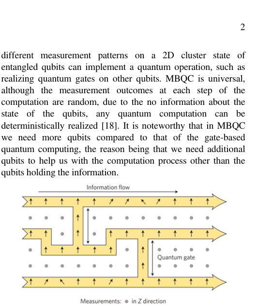
<figcaption class="paper-figure-caption"><b>Fig 1.</b> Fig. 2. Quantum computation by measuring qubits in differene bases on a lattice. Before the measurements the qubits are in the 2D cluster state. Circles symbolize measurements of Z direction, vertical arrows are measurements of X direction, while tilted arrows refer to measurements in X-Y plane [12].</figcaption>
</figure>
<figure class="paper-figure-card">

<figcaption class="paper-figure-caption"><b>Fig 2.</b> Figure 3 shows a practical example of MBQC, specifically showcasing the realization of a CNOT gate through single- particle measurements [12]. In Figure 3 (a), a simplified setup for implementing the CNOT gate is shown. The &quot;target in&quot; and &quot;target out&quot; qubits represent the target qubit’s initial and final states, respectively, while the &quot;control&quot; qubit influences the target through the entangled state. The arrows indicate measurements in various bases, and the results of these measurements determine the outcome of the computation.</figcaption>
</figure>
<figure class="paper-figure-card">
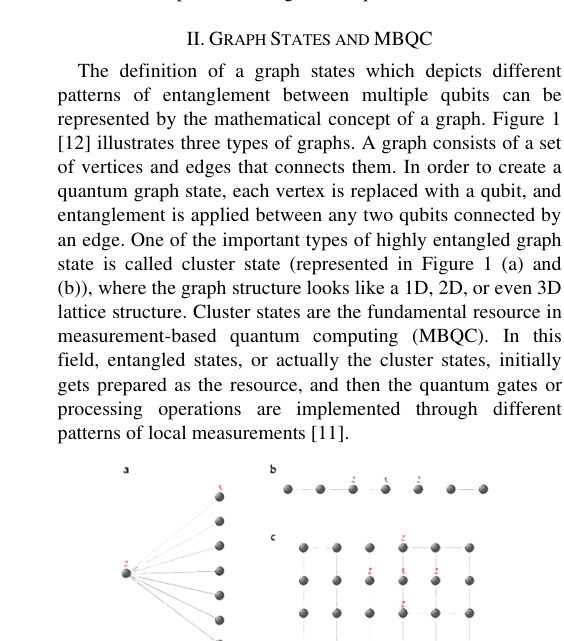
<figcaption class="paper-figure-caption"><b>Fig 3.</b> Fig. 1. Different types of graphs states, (a) GHZ graph states, (b) 1D and (c) 2D cluster states [12].</figcaption>
</figure>
<figure class="paper-figure-card">
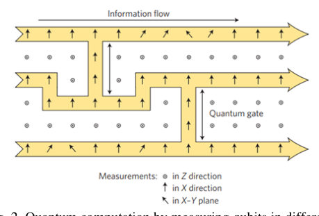
<figcaption class="paper-figure-caption"><b>Fig 4.</b> Figure 3 (b) further demonstrates this by showing a cluster- state-based implementation of the CNOT gate in MBQC. The horizontal and vertical connections demonstrate how the entanglement structure enables control-target interactions which</figcaption>
</figure>
<figure class="paper-figure-card">
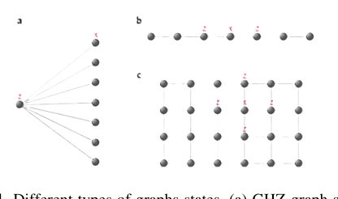
<figcaption class="paper-figure-caption"><b>Fig 5.</b> Figure 2 illustrates the MBQC process, showing how</figcaption>
</figure>
</div>

<p><strong>Summary.</strong> This paper addresses the challenge of building scalable quantum computers by focusing on photonic cluster states for Measurement-Based Quantum Computing. It details how optimizing cavity Q-factors and emitter cooperativity, using advanced design techniques, is essential to generate these highly entangled resource states deterministically.</p>
<p><strong>Why it may be interesting.</strong> It provides a concrete roadmap connecting fundamental AMO physics challenges (optimizing light-matter coupling in cavities) directly to the engineering requirements for next-generation quantum computation hardware.</p>
<details>
<summary>Detailed structure</summary>
<p><strong>Main problem.</strong> The primary goal is enabling scalable, fault-tolerant quantum computation using Measurement-Based Quantum Computing (MBQC) via photonic cluster states.</p>
<p><strong>Main result.</strong> The paper demonstrates that optimizing cavity parameters, particularly achieving high Q-factors (&gt;5000) through inverse design, is crucial for generating the necessary highly entangled photonic resource states.</p>
<p><strong>Method.</strong> The work combines theoretical review of MBQC principles with experimental/computational optimization techniques (like Genetic Algorithms) applied to engineered cavity quantum electrodynamics systems.</p>
<p><strong>Model / system.</strong> The system involves single-photon emitters (Quantum Dots) coupled into highly engineered optical microcavities. The process relies on generating and manipulating photonic cluster states, which serve as the resource for computation.</p>
<p><strong>Key observables.</strong> High Q-factor (&gt;5000), near-Gaussian far-field emission pattern, and high cooperativity ($C$) of the spin-photon interface.</p>
<p><strong>Important parameters / regimes.</strong> Cooperativity parameter $C = 2g^2 / (\kappa\gamma)$, cavity quality factor (Q-factor), and optical coupling strength ($g$).</p>
<p><strong>Assumptions / limitations.</strong> The feasibility of deterministic cluster state generation requires significant improvements in cavity performance beyond conventional designs.</p>
<p><strong>Figures summary.</strong> Figures illustrate graph states, the MBQC process using 2D cluster states to implement gates like CNOT, and show optimized cavities exhibiting near-Gaussian far-field emission patterns with high Q-factors.</p>
<p><strong>Paper structure.</strong> The paper reviews MBQC theory, details the physical implementation using QD/cavity systems for deterministic state generation (1D $
ightarrow$ 2D), and concludes by focusing on advanced cavity design optimization techniques like inverse design to boost performance metrics.</p>
</details>
<details>
<summary>Abstract</summary>
<p>Photonic cluster states are fundamental resource for measurement-based quantum computing (MBQC), which is a promising approach for scalable quantum computing. These highly entangled states enable computation with applying local measurements rather than gate operations, which makes them essential for fault-tolerant quantum computing. Generation of the photonic cluster states requires high-quality entanglement and stability, which can be done by making use of cavity quantum electrodynamics (cavity QED), which is embedding quantum dots (QDs) into photonic microcavities. This method enables controlled single-photon emission and the entanglement of them, helping with key challenges in generating photonic cluster states. Enhancing the generation of the photonic cluster state requires improvement in the quality factor (Q-factor) and therefore, cooperativity of cavity and QD systems. A high Q-factor helps with reduction in photon loss and decoherence, ensuring more stable and high-fidelity quantum states. It also enables better light-matter interactions, improving cluster state quality. Cooperativity, which is a measure for the light-matter coupling strength relative to dissipation, directly impacts photon emission efficiency. Optimization of these parameters improves entanglement generation, which is essential for producing high-quality photonic cluster states. Therefore, optimized cavities are essential for improving the generation of the photonic cluster states. Scalability is also an important parameter for the generation of the large-scale cluster states used in quantum computing. In this paper, after reviewing MBQC, cluster states, and the generation of the photonic cluster states, we investigate the deterministic generation of the photonic cluster state resource for the purpose of MBQC, and highlights the importance of the inverse design techniques for this goal.</p>
</details>
<p><sub><a href="#top">↑ back to top</a></sub></p>

<p><a id="paper-2607.17498"></a></p>
<h3 id="llm-driven-cross-paradigm-design-for-quantum-optimal-control"><a href="http://arxiv.org/abs/2607.17498v1">LLM-Driven Cross-Paradigm Design for Quantum Optimal Control</a></h3>
<p><strong>Authors:</strong> Yu-Qin Chen, Shi-Xin Zhang<br>
<strong>Type:</strong> theory · <strong>Category:</strong> other · <strong>PDF:</strong> <a href="https://arxiv.org/pdf/2607.17498v1">https://arxiv.org/pdf/2607.17498v1</a><br>
<strong>Analysis basis:</strong> full PDF text, analyzed in chunks
<strong>Topic relevance:</strong> 🔥 <code>analog quantum simulation</code> <strong>4/5</strong> · <code>Rydberg arrays</code> <strong>3/5</strong> · <code>exotic spin models in light-matter</code> <strong>3/5</strong> · <code>methods for driven-dissipative</code> <strong>2/5</strong> · <code>non-equilibrium dynamics</code> <strong>2/5</strong> · <code>correlated / nonlocal dissipation</code> <strong>1/5</strong> · <code>correlated cavity matter</code> <strong>1/5</strong> · <code>driven-dissipative phase transition</code> <strong>1/5</strong> · <code>entanglement &amp; information structure</code> <strong>1/5</strong> · <code>non-equilibrium universality</code> <strong>1/5</strong></p>
<div class="figure-strip-hint">↔ Scroll figures horizontally</div>
<div class="paper-figures-scroll">
<figure class="paper-figure-card">
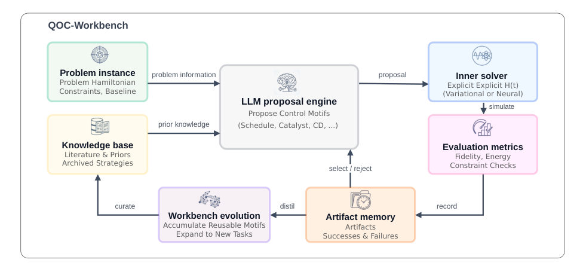
<figcaption class="paper-figure-caption"><b>Fig 1.</b> FIG. 1. LLM-driven cross-paradigm design for quantum control protocols. The workflow couples Hamiltonian instances, an LLM proposal engine, inner solvers or neural generators, direct quantum simulation and artifact memory. The aim is to make the generation–evaluation–selection loop auditable and transferable across Hamiltonian families.</figcaption>
</figure>
<figure class="paper-figure-card">
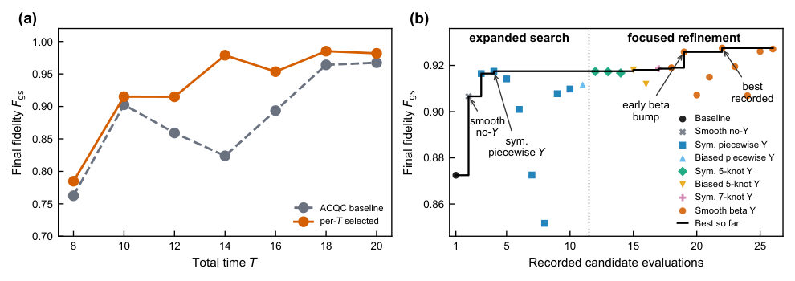
<figcaption class="paper-figure-caption"><b>Fig 2.</b> FIG. 2. Rydberg MIS control-pulse design and exploration history. a, Fixed C6 instance evaluated at seven total times. The gray dashed curve shows the final fidelity of the reproduced smooth ACQC baseline as a function of T. The orange curve shows the final fidelity of the best candidate selected independently at each T from 62 candidate slots evaluated separately for each total time. Averaging the seven plotted values gives 0.882 for the baseline and 0.931 for the selected protocols. b, Ten- site C10 search trace at fixed T = 30. Points show hardware-compatible candidates proposed by QOC-Workbench, recorded in chronological order. The black staircase marks the best final fidelity found so...</figcaption>
</figure>
<figure class="paper-figure-card">
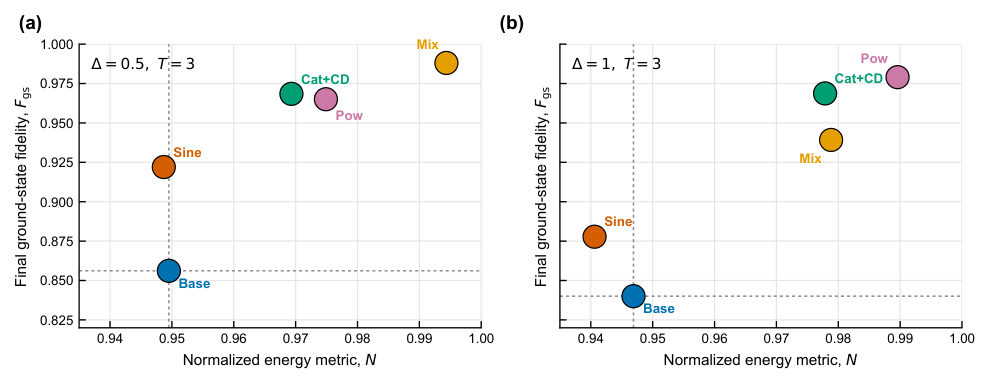
<figcaption class="paper-figure-caption"><b>Fig 3.</b> FIG. 3. XXZ catalyst and schedule design. Both panels use an eight-site periodic XXZ spin chain evolved for total time T = 3. a, Results for anisotropy ∆= 0.5. Points compare the reproduced baseline with representative improved candidates from four LLM-designed families in the plane of normalized final-energy metric N and final ground-state fidelity Fgs. b, Results for anisotropy ∆= 1 after replacing endpoint-nonsmooth schedule variants by endpoint-clean alternatives, shown with the same axes and protocol colors. Dashed guide lines mark the reproduced baseline in each panel. Protocol abbreviations used as point labels are detailed in the Supplementary Information.</figcaption>
</figure>
<figure class="paper-figure-card">
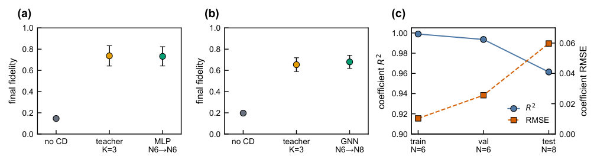
<figcaption class="paper-figure-caption"><b>Fig 4.</b> FIG. 4. Amortized weighted-CD generation for random TFIM instances. a, Fixed-size generalization at T = 1.5 for no CD, exact weighted-CD teacher and the node-wise MLP generator on 12 unseen 2 × 3 (N = 6) test instances. Points show mean final fidelity and error bars denote one standard deviation over test instances. b, Cross-size transfer at T = 2.5 for no CD, exact weighted-CD teacher and the GNN generator on six unseen 2 × 4 (N = 8) test instances, with the same mean and standard-deviation notation. Here K = 3 denotes the hyperparameter for the weighted variational-CD teacher loss, which biases the fit toward the low-energy subspace; details are given in the Supplementary Information. c,...</figcaption>
</figure>
</div>

<p><strong>Summary.</strong> The paper introduces QOC-Workbench, an LLM-driven framework designed to automate Quantum Optimal Control protocol design. It moves beyond simple parameter tuning by allowing the system to propose entirely new structural hypotheses for Hamiltonians across diverse physical models like Rydberg arrays and spin chains. This establishes a powerful, autonomous methodology for quantum state engineering.</p>
<p><strong>Why it may be interesting.</strong> This work directly tackles the bottleneck of applying theoretical quantum control concepts to real hardware by creating an automated, cross-paradigm design methodology that bridges theory and experimental constraints.</p>
<details>
<summary>Detailed structure</summary>
<p><strong>Main problem.</strong> The core challenge is automating Quantum Optimal Control (QOC) protocol design, which traditionally requires immense expert effort for each unique physical instance.</p>
<p><strong>Main result.</strong> The proposed LLM-driven workflow successfully autonomously discovers hardware-compliant auxiliary controls and structural deformations that outperform existing literature baselines across diverse quantum systems.</p>
<p><strong>Method.</strong> It introduces QOC-Workbench, an LLM-guided loop that parses physics literature to propose novel structural hypotheses for Hamiltonians, which are then validated via direct simulation rather than simple parameter tuning.</p>
<p><strong>Model / system.</strong> The work applies to various physical models including Rydberg-atom arrays (MIS problem), interacting XXZ spin chains, and random transverse-field Ising models (TFIM). The control is governed by time-dependent Hamiltonians $H(t)$.</p>
<p><strong>Key observables.</strong> Final ground-subspace fidelity ($F_{gs}$), normalized energy ($\mathcal{N}$), and adiabatic following metrics.</p>
<p><strong>Important parameters / regimes.</strong> Control functions $\{u_k(t)\}$, Hamiltonian parameters (e.g., $\Delta$ for XXZ, graph size $N$), and the variational action minimization parameter $K$.</p>
<p><strong>Assumptions / limitations.</strong> The primary assumption is that LLMs can reliably parse literature to propose novel functional forms and structural modifications beyond what human experts might enumerate.</p>
<p><strong>Figures summary.</strong> Figures illustrate the workflow components (LLM proposal engine, solver), show control-pulse design histories for Rydberg MIS (comparing baselines to refined protocols), and compare performance metrics ($\mathcal{N}$ vs $F_{gs}$) across different protocol deformations.</p>
<p><strong>Paper structure.</strong> The paper is structured around demonstrating the QOC-Workbench workflow across three distinct physical cases: Rydberg atoms, XXZ chains, and TFIMs. It moves from basic parameter refinement to structural Hamiltonian path engineering, culminating in a transferable GNN generator for large systems.</p>
</details>
<details>
<summary>Abstract</summary>
<p>Quantum optimal control (QOC) underpins adiabatic quantum computation, quantum annealing, and quantum state engineering, yet practical deployment is fundamentally bottlenecked by strict hardware constraints and substantial expert effort required to design protocols for each problem instance. To overcome this, we introduce QOC-Workbench, an auditable, large language model (LLM)-driven workflow that acts as an automated quantum co-scientist for cross-paradigm protocol design. Going beyond traditional numerical optimizers that merely tune parameters within a fixed formula, the LLM autonomously parses physics literature, proposes structural hypotheses, and writes code to validate them by direct simulation. This workflow supports cross-paradigm design by accumulating control motifs across tasks. We demonstrate this approach across three distinct settings: Case 1, Rydberg-atom maximum-independent-set arrays; Case 2, interacting XXZ spin chains; and Case 3, random transverse-field Ising models. In Cases 1 and 2, the workflow autonomously discovers hardware-compliant auxiliary controls, target catalysts, and schedule deformations that outperform literature baselines. In Case 3, it addresses the computational bottleneck of variational counterdiabatic driving by escalating from per-instance optimization to an amortized graph-neural-network generator, successfully transferring learned coefficient paths to larger unseen systems. By actively bridging the gap between theoretical algorithms and experimental restrictions across distinct control paradigms and Hamiltonian families, QOC-Workbench establishes a continuously evolving, cross-paradigm methodology for autonomous quantum control.</p>
</details>
<p><sub><a href="#top">↑ back to top</a></sub></p>

<p><a id="paper-2607.16951"></a></p>
<h3 id="operational-relation-between-one-time-and-two-time-work-protocols-and-measurement-resolution-induced-transitions-in-quantum-work-statistics"><a href="http://arxiv.org/abs/2607.16951v1">Operational Relation Between One-Time and Two-Time Work Protocols and Measurement-Resolution-Induced Transitions in Quantum Work Statistics</a></h3>
<p><strong>Authors:</strong> Daniel Alonso, Antonia Ruiz-García<br>
<strong>Type:</strong> both · <strong>Category:</strong> statistical mechanics · <strong>PDF:</strong> <a href="https://arxiv.org/pdf/2607.16951v1">https://arxiv.org/pdf/2607.16951v1</a><br>
<strong>Analysis basis:</strong> full PDF text, analyzed in chunks
<strong>Topic relevance:</strong> 🔥 <code>measurement-induced transitions</code> <strong>4/5</strong> · <code>driven-dissipative phase transition</code> <strong>3/5</strong> · <code>quantum measurements</code> <strong>3/5</strong> · <code>non-equilibrium dynamics</code> <strong>2/5</strong> · <code>non-equilibrium universality</code> <strong>2/5</strong> · <code>Keldysh / 2PI / non-Gaussian methods</code> <strong>1/5</strong> · <code>QC/QI experiment</code> <strong>1/5</strong> · <code>entanglement &amp; information structure</code> <strong>1/5</strong> · <code>methods for driven-dissipative</code> <strong>1/5</strong> · <code>spintronics-quantum-optics interface</code> <strong>1/5</strong></p>
<div class="figure-strip-hint">↔ Scroll figures horizontally</div>
<div class="paper-figures-scroll">
<figure class="paper-figure-card">
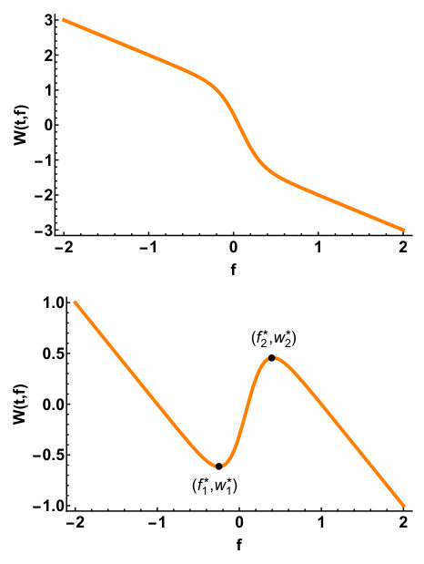
<figcaption class="paper-figure-caption"><b>Fig 1.</b> FIG. 1. Function W(t, f) for a given final time t with positive (top) and negative (bottom) A1. For A1(t) &gt; 0 the inverse f = W −1(w) has a single branch and yields a smooth PW (w). For A1(t) &lt; 0 three branches appear and there are work val- ues w∗ 1,2 for which dW/df = 0. If PF (f ∗ 1,2) is non-negligible, PW (w) develops peaks at w∗ 1,2.</figcaption>
</figure>
<figure class="paper-figure-card">
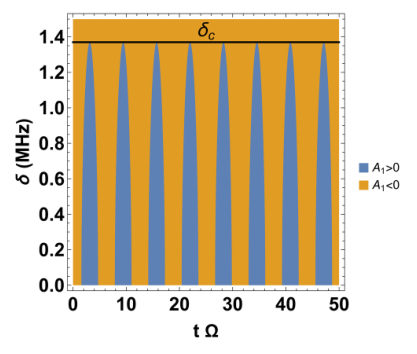
<figcaption class="paper-figure-caption"><b>Fig 2.</b> FIG. 2. Sign of A1 as a function of final time t and detuning δ. The horizontal dashed line marks the critical detuning δc. Parameters as in Ref. [11]: ω = 3.0 × 109 Hz and ω1 = 1.37 × 106 Hz.</figcaption>
</figure>
<figure class="paper-figure-card">
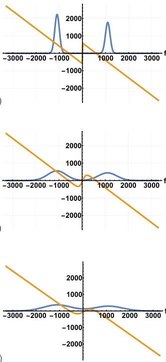
<figcaption class="paper-figure-caption"><b>Fig 3.</b> FIG. 3. Sequence of work probability distributions for decreasing values of λ and A1 &lt; 0. For each value of λ, the left panel shows PF (f) and W(t, f), while the right panel depicts the resulting PW (w). Large λ corresponds to ideal measurements, while smaller λ approaches the weak-measurement limit. The model parameters are: ω = 3 × 109 Hz, ω1 = 1.37 × 106 Hz, δ = 0, and t = 1 × Ω−1, yielding A1 &lt; 0. In panels (a)-(b): λ = 21.9, (c)-(d): λ = 5.47, (e)-(f): λ = 3.65. Energies f, w, and W(t, f) are expressed in units of ℏΩ.</figcaption>
</figure>
<figure class="paper-figure-card">
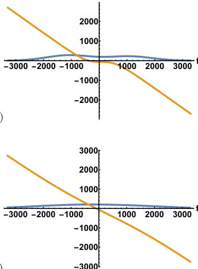
<figcaption class="paper-figure-caption"><b>Fig 4.</b> FIG. 4. The same as Fig. 3. In panels (a)-(b): λ = 2.72, which corresponds to ω∗ 1 = ω∗ 2, and in panels (c)-(d) λ = 1.46. This last value approaches the weak-measurement regime.</figcaption>
</figure>
<figure class="paper-figure-card">
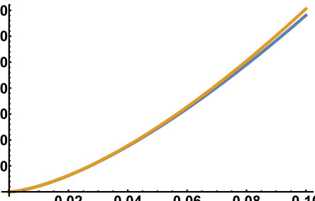
<figcaption class="paper-figure-caption"><b>Fig 5.</b> FIG. 5. Peak separation ∆W = w2 −w1 in the NV-center system as a function of the scaling parameter ε = (σc −σ)/σc. The</figcaption>
</figure>
</div>

<p><strong>Summary.</strong> The authors demonstrate that information about one-time quantum work protocols can be extracted from standard two-time measurement data through classical post-processing. They predict a unique, resolution-dependent statistical transition in the work distribution, which manifests as singular peaks. This provides an experimentally accessible method to quantify coherence using only energy measurements on systems like NV centers.</p>
<p><strong>Why it may be interesting.</strong> This work bridges quantum thermodynamics with measurement theory, providing a concrete, measurable signature (the non-analytic peak structure) that quantifies fundamental resources like coherence using only energy measurements. This is highly relevant for understanding open quantum systems dynamics.</p>
<details>
<summary>Detailed structure</summary>
<p><strong>Main problem.</strong> The paper establishes an operational link between one-time and two-time quantum work measurement protocols, focusing on how coherence information can be extracted from standard energy measurements.</p>
<p><strong>Main result.</strong> It predicts a resolution-driven statistical transition in the work distribution, characterized by non-analytic square-root divergent peaks when the measurement resolution is below a critical value. Furthermore, it shows that this distribution encodes the relative entropy of coherence.</p>
<p><strong>Method.</strong> The analysis involves deriving operational relations between different quantum work definitions (OTM vs TTM) and analyzing the resulting probability distributions using techniques from non-equilibrium statistical mechanics.</p>
<p><strong>Model / system.</strong> The primary model is a driven two-level system, which is demonstrated experimentally using a nitrogen-vacancy (NV) center in diamond. The dynamics are governed by a time-dependent Hamiltonian.</p>
<p><strong>Key observables.</strong> Work statistics ($W^{(1)}$ vs $W^{(2)}$), relative entropy of coherence ($C_{\hat{H}}(t)$), and the work probability distribution $P_W(w)$.</p>
<p><strong>Important parameters / regimes.</strong> Measurement resolution ($\sigma$), critical resolution ($\sigma_c$), and dynamical factors like $A_1(t)$.</p>
<p><strong>Assumptions / limitations.</strong> The analysis relies on modeling non-ideal measurements using Positive Operator Valued Measures (POVMs) and assumes the ability to perform classical post-processing of TTM data.</p>
<p><strong>Figures summary.</strong> Figures illustrate the work value $W(t, f)$ for different measurement regimes (projective vs. weak) and show the development of non-analytic peaks in the work distribution as resolution changes.</p>
<p><strong>Paper structure.</strong> The paper first establishes the operational equivalence between OTM and TTM protocols. It then analyzes the resulting work statistics, deriving relations involving entropy measures. The core is the analysis of the statistical transition governed by measurement resolution, culminating in experimental demonstrations using the NV center platform.</p>
</details>
<details>
<summary>Abstract</summary>
<p>We establish a direct operational connection between the one-time measurement (OTM) and two-time measurement (TTM) protocols for quantum work statistics, showing that OTM work values, including coherence signatures, can be reconstructed from standard TTM data through classical post-processing without any modification of the experimental setup. This reveals that coherence information commonly attributed to OTM schemes is already latent within TTM data and becomes explicit upon a natural post-processing step. For a driven two-level system subject to finite-resolution energy measurements, this reconstruction unveils a resolution-driven statistical transition in the work distribution: whereas projective and weak measurements yield smooth distributions, intermediate resolutions produce non-analytic structures whose character is determined by the dynamics and a critical meter resolution. We show that the non-analyticity of the OTM work distribution takes the form of square-root divergent peaks at specific work values, and that the separation between these singular points is an experimentally accessible quantity that vanishes at the critical resolution with a universal exponent. The same dynamical quantities that govern the transition also encode the relative entropy of coherence of the driven state, enabling coherence quantification from energy measurements alone. We demonstrate experimental accessibility in a nitrogen-vacancy center platform with parameters drawn from current experiments, where both sides of the transition and the coherence signatures are within reach of existing technology.</p>
</details>
<p><sub><a href="#top">↑ back to top</a></sub></p>

<p><a id="paper-2607.17023"></a></p>
<h3 id="rigorous-characterization-of-continuous-variable-quantum-states-via-optical-parametric-amplifiers"><a href="http://arxiv.org/abs/2607.17023v1">Rigorous characterization of continuous-variable quantum states via optical parametric amplifiers</a></h3>
<p><strong>Authors:</strong> Manthan Badbaria, Fumiya Hanamura, Maxime Garnier, Ulysse Chabaud, Rajveer Nehra<br>
<strong>Type:</strong> both · <strong>Category:</strong> quantum information and computing · <strong>PDF:</strong> <a href="https://arxiv.org/pdf/2607.17023v1">https://arxiv.org/pdf/2607.17023v1</a><br>
<strong>Analysis basis:</strong> full PDF text, analyzed in chunks
<strong>Topic relevance:</strong> 🔥 <code>QC/QI experiment</code> <strong>4/5</strong> · <code>quantum measurements</code> <strong>3/5</strong> · <code>quantum optics experiment</code> <strong>3/5</strong> · <code>entanglement &amp; information structure</code> <strong>2/5</strong> · <code>measurement-induced transitions</code> <strong>2/5</strong> · <code>Keldysh / 2PI / non-Gaussian methods</code> <strong>1/5</strong> · <code>analog quantum simulation</code> <strong>1/5</strong> · <code>driven-dissipative phase transition</code> <strong>1/5</strong> · <code>methods for driven-dissipative</code> <strong>1/5</strong></p>
<div class="figure-strip-hint">↔ Scroll figures horizontally</div>
<div class="paper-figures-scroll">
<figure class="paper-figure-card">
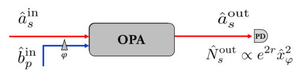
<figcaption class="paper-figure-caption"><b>Fig 1.</b> FIG. 1. Illustration of the experimental scheme for sign-free quadrature measurement. The operators represent the input signal and pump modes ˆain s ˆbin p , respectively. The unknown quantum state is first amplified with a high-gain OPA. Sub- sequently, a quadrature power measurement is performed on the amplified state, directly detecting the squared quadrature selected by the pump phase.</figcaption>
</figure>
<figure class="paper-figure-card">
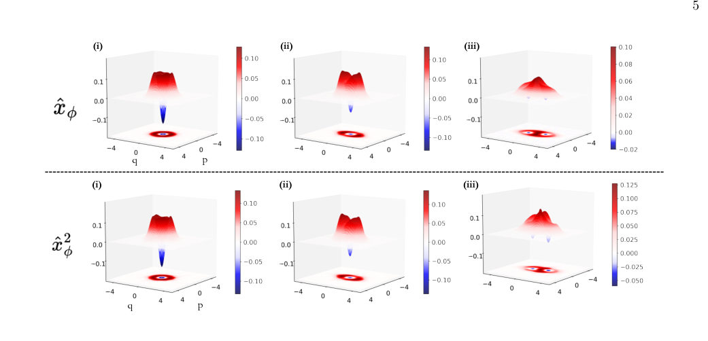
<figcaption class="paper-figure-caption"><b>Fig 2.</b> FIG. 2. Comparison of quantum state reconstruction using conventional homodyne detection and the proposed OPA-based measurement protocol. Experimental homodyne data for the generalized quadrature xφ are taken from the experiments in Refs. [49–51]. Top row: Wigner functions reconstructed for representative non-Gaussian states—single-photon, Schr¨odinger cat, and Gottesman–Kitaev–Preskill (GKP) states (left to right)—using balanced homodyne detection (BHD). The reconstruc- tion employs the quadrature POVM |xϕ⟩⟨xϕ| together with the semidefinite program in Eq. 8. Bottom row: Wigner functions reconstructed from the proposed OPA-based measurement using the POVM defined in Eq. 5 and the...</figcaption>
</figure>
<figure class="paper-figure-card">
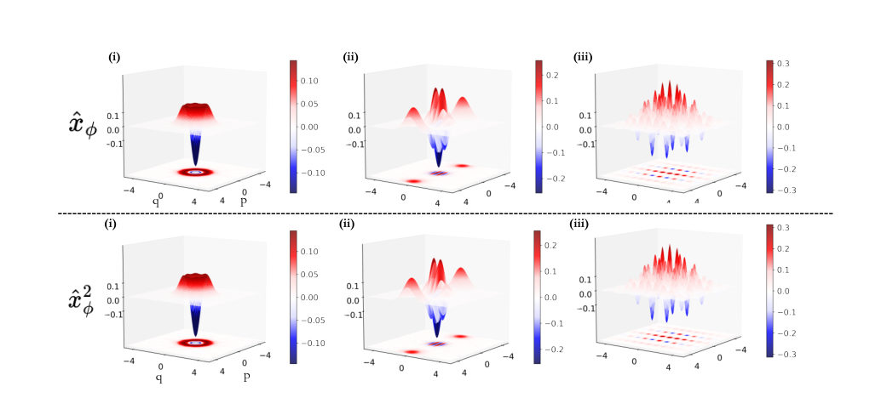
<figcaption class="paper-figure-caption"><b>Fig 3.</b> FIG. 3. Comparison of quantum state reconstruction using homodyne and OPA-based measurements for representative non- Gaussian states. From left to right: single-photon, Schr¨odinger cat, and Gottesman–Kitaev–Preskill (GKP) states. Top row: Wigner functions reconstructed from conventional homodyne tomography using the generalized quadrature distribution P(xφ) within the semidefinite-program (SDP) reconstruction framework. Bottom row: Wigner functions reconstructed from the proposed OPA-assisted protocol using the phase-insensitive quadrature-power distribution P(|xφ|) together with the corresponding OPA POVM in the same SDP framework.</figcaption>
</figure>
<figure class="paper-figure-card">
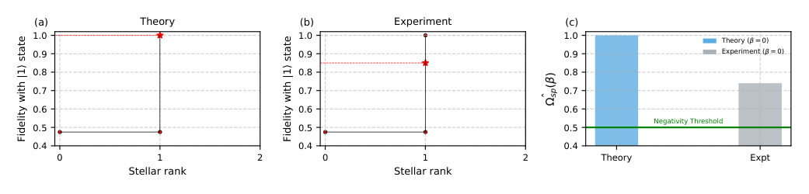
<figcaption class="paper-figure-caption"><b>Fig 4.</b> FIG. 4. Certification of a single-photon state |1⟩[62] using using experimental homodyne tomography data and simulated sign-free quadrature data. (a) Stellar-rank witness for the simulated state obtained via direct fidelity estimation, together with the stellar robustness profile of a target single-photon state. (b) Stellar-rank witness for the experimental |1⟩state [62] obtained using the same procedure. In both panels, the red star denotes the measured fidelity mapped onto the stellar robustness profile, certifying stellar rank 1. (c) Wigner-negativity witness for the simulated and experimental states using the expectation value of the operator Ωsp := ˆD(β) (|1⟩⟨1| + |3⟩⟨3| + |5⟩⟨5|)...</figcaption>
</figure>
<figure class="paper-figure-card">
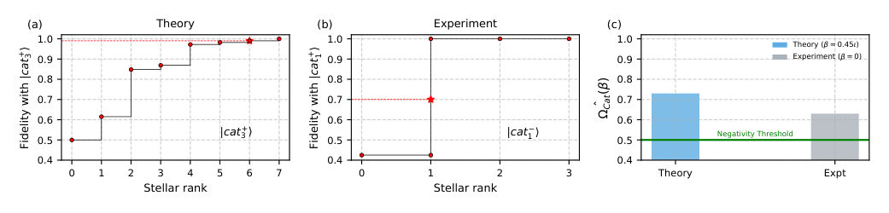
<figcaption class="paper-figure-caption"><b>Fig 5.</b> FIG. 5. Certification of cat states using the homodyne tomography data from experiments in Ref. [63] and simulated sign-free quadrature measurement data. (a) Stellar rank witnessing of simulated sign-free |cat+ 3 ⟩state using our direct fidelity estimation method together with the stellar robustness profile of a target |cat+ 3 ⟩state. (b) Stellar rank witnessing of experimental small amplitude cat state [63] using our direct fidelity estimation method together with the stellar robustness profile of a target |cat− 1 ⟩ state. (c) Wigner negativity witnessing of the simulated and experimental small amplitude cat state using our direct fidelity estimation method together with the Wigner...</figcaption>
</figure>
</div>

<p><strong>Summary.</strong> This paper presents an integrated framework to characterize non-Gaussian continuous-variable quantum states using optical parametric amplification. By employing sign-free quadrature measurements analyzed via semidefinite programming (SDP), the method achieves loss tolerance for state tomography and certifies non-classicality. This offers a practical toolset for advancing photonic quantum information processing.</p>
<p><strong>Why it may be interesting.</strong> This work provides a highly practical and experimentally accessible roadmap for verifying complex quantum states in photonic systems, directly addressing bottlenecks in current quantum networking and computation hardware.</p>
<details>
<summary>Detailed structure</summary>
<p><strong>Main problem.</strong> The primary challenge is developing robust methods to characterize non-Gaussian quantum states essential for continuous-variable (CV) quantum information processing.</p>
<p><strong>Main result.</strong> The authors introduce a unified, loss-tolerant framework using high-gain OPA measurements and semidefinite programming (SDP) that successfully reconstructs complex states like cat and GKP states.</p>
<p><strong>Method.</strong> They combine sign-free quadrature measurements obtained via optical parametric amplification with computationally efficient SDP solvers for state tomography and non-Gaussianity certification.</p>
<p><strong>Model / system.</strong> The work focuses on continuous-variable quantum states, particularly parity-symmetric states such as single-photon, Schrödinger cat, and Gottesman-Kitaev-Preskill (GKP) states, implemented using photonic systems.</p>
<p><strong>Key observables.</strong> Quadrature distributions $P(|x_\varphi|)$, Wigner negativity, stellar rank ($   ext{r}^\star$), and reconstruction fidelity ($F$).</p>
<p><strong>Important parameters / regimes.</strong> Detector efficiency, measurement bandwidth, and the specific parameters defining the target states (e.g., amplitude $\alpha$ for cat states).</p>
<p><strong>Assumptions / limitations.</strong> The method is shown to be effective even when the sign-free measurement is not fully tomographically complete; low fidelity in reconstruction highlights practical limitations due to optical loss.</p>
<p><strong>Figures summary.</strong> Figures compare Wigner function reconstructions from conventional homodyne detection versus OPA-based tomography using both full and sign-free quadrature data for various states (e.g., GKP).</p>
<p><strong>Paper structure.</strong> The paper progresses by first identifying the limitations of standard CV state characterization, then proposing the OPA/SDP framework for loss-tolerant reconstruction, followed by developing direct certification methods using witnesses like stellar rank.</p>
</details>
<details>
<summary>Abstract</summary>
<p>Characterizing non-Gaussian quantum states is of paramount importance for continuous-variable quantum information processing, yet conventional homodyne-measurement-based state tomography remains limited by optical loss, detector efficiency, and measurement bandwidth. Here, we introduce an integrated framework for loss-tolerant characterization and certification using high-gain phase-sensitive optical parametric amplification and power measurements. Our computationally efficient semidefinite programming approach enables faithful reconstruction of parity-symmetric quantum states from amplified quadrature measurements while substantially relaxing detector-efficiency requirements and increasing the measurement bandwidth. We further develop a certification framework that directly quantifies non-Gaussianity via stellar-rank witnesses and Wigner negativity, using the same quadrature-power measurements. We demonstrate the efficacy of the proposed framework through both simulated and experimental data for representative quantum states, including single-photon, Schrodinger cat, and Gottesman-Kitaev-Preskill (GKP) states. By unifying loss-tolerant measurements, state tomography, and nonclassical-state certification within a single experimentally accessible framework, our approach provides a practical pathway toward verifying increasingly complex states and can be readily implemented with current quantum photonic technologies.</p>
</details>
<p><sub><a href="#top">↑ back to top</a></sub></p>

<p><a id="paper-2607.17915"></a></p>
<h3 id="large-scale-behavior-in-the-kuramoto-sivashinsky-equation-the-schwinger-dyson-route"><a href="http://arxiv.org/abs/2607.17915v1">Large scale behavior in the Kuramoto-Sivashinsky equation: The Schwinger-Dyson route</a></h3>
<p><strong>Authors:</strong> Olivier Coquand<br>
<strong>Type:</strong> theory · <strong>Category:</strong> statistical mechanics · <strong>PDF:</strong> <a href="https://arxiv.org/pdf/2607.17915v1">https://arxiv.org/pdf/2607.17915v1</a><br>
<strong>Analysis basis:</strong> full PDF text, analyzed in chunks
<strong>Topic relevance:</strong> 🔥 <code>Keldysh / 2PI / non-Gaussian methods</code> <strong>4/5</strong> · <code>methods for driven-dissipative</code> <strong>3/5</strong> · <code>non-equilibrium universality</code> <strong>3/5</strong> · <code>driven-dissipative phase transition</code> <strong>2/5</strong> · <code>non-equilibrium dynamics</code> <strong>2/5</strong> · <code>Frenkel-Kontorova</code> <strong>1/5</strong> · <code>analog quantum simulation</code> <strong>1/5</strong> · <code>correlated / nonlocal dissipation</code> <strong>1/5</strong></p>
<div class="figure-strip-hint">↔ Scroll figures horizontally</div>
<div class="paper-figures-scroll">
<figure class="paper-figure-card">
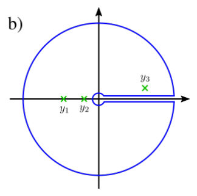
<figcaption class="paper-figure-caption"><b>Fig 1.</b> Figure 1: a) Integration contour for ν &gt; 0. There is one pole on the positive real axis. b) Integration contour for ν &lt; 0. All the poles are inside the contour.</figcaption>
</figure>
</div>

<p><strong>Summary.</strong> This paper rigorously analyzes the large-scale behavior of the Kuramoto-Sivashinsky equation using advanced field theory techniques. By applying Schwinger-Dyson equations, the authors prove that any stable scaling solution must exhibit a sign change in its effective viscosity. This result strongly suggests that the system universally falls into the KPZ universality class.</p>
<p><strong>Why it may be interesting.</strong> While focused on classical PDEs, the techniques used—renormalization group flow analysis and field-theoretic methods applied to non-equilibrium dynamics—are highly relevant to understanding critical phenomena and long-range correlations in quantum many-body systems.</p>
<details>
<summary>Detailed structure</summary>
<p><strong>Main problem.</strong> The study aims to determine the large-scale (infrared) behavior of solutions to the Kuramoto-Sivashinsky (KS) equation.</p>
<p><strong>Main result.</strong> The authors prove that for stable scaling in the infrared limit, the effective viscosity must exhibit a sign change, suggesting the system belongs to the KPZ universality class regardless of initial conditions.</p>
<p><strong>Method.</strong> The analysis employs the Schwinger-Dyson framework combined with renormalization group techniques applied to the field theory formulation derived from the KS equation's dynamics.</p>
<p><strong>Model / system.</strong> The primary model is the Kuramoto-Sivashinsky (KS) equation, a nonlinear Partial Differential Equation used to describe phenomena like flame front perturbations and interface dynamics. It belongs to the class of PDE chaos.</p>
<p><strong>Key observables.</strong> Effective viscosity ($
u$), scaling exponents ($z$, $\eta_
u$, $\eta_D$), and the polarization bubble ($\Pi(\Omega,p)$).</p>
<p><strong>Important parameters / regimes.</strong> The analysis focuses on the Infrared (IR) limit, comparing regimes like Edwards-Wilkinson (EW) and Kardar-Parisi-Zhang (KPZ). The viscosity parameter $
u$ is crucial.</p>
<p><strong>Assumptions / limitations.</strong> The central assumption is that an infrared stable scaling regime exists for the system under study. The method also assumes equivalence between forced and spontaneous stochastic formulations.</p>
<p><strong>Figures summary.</strong> Figures illustrate integration contours used in the Schwinger-Dyson calculation, distinguishing between cases where poles lie on or off the positive real axis based on the sign of viscosity ($
u$).</p>
<p><strong>Paper structure.</strong> The paper builds by first establishing the theoretical framework using MSRJD and Schwinger-Dyson equations. It then analyzes the polarization bubble integral in different regimes (EW vs. KPZ) to constrain the possible scaling behaviors, culminating in a proof that sign change of viscosity is necessary for stability.</p>
</details>
<details>
<summary>Abstract</summary>
<p>The present paper is a study of the large scale properties of the Kuramoto-Sivashinsky equation. By using a Schwinger-Dyson framework, we aim to provide a proof that the only solutions that can sustain a stable scaling in the infrared limit have a negative effective viscosity (in the Kuramoto-Sivashinsky sense) with a minimal set of hypotheses, thereby showing that this constitutes a general property of the wave equation that does not depend on a specific set of truncations of a renormalisation group flow, or limitations of a given numerical scheme for example.</p>
</details>
<p><sub><a href="#top">↑ back to top</a></sub></p>

<p><a id="paper-2607.17886"></a></p>
<h3 id="unifying-charge-learnability-transitions-in-u1-symmetric-quantum-circuits-through-informational-power-of-local-measurement"><a href="http://arxiv.org/abs/2607.17886v1">Unifying Charge-Learnability Transitions in U(1)-Symmetric Quantum Circuits through Informational Power of Local Measurement</a></h3>
<p><strong>Authors:</strong> Yi-Fan Gong, Dan-Bo Zhang<br>
<strong>Type:</strong> theory · <strong>Category:</strong> quantum information and computing · <strong>PDF:</strong> <a href="https://arxiv.org/pdf/2607.17886v1">https://arxiv.org/pdf/2607.17886v1</a><br>
<strong>Analysis basis:</strong> full PDF text, analyzed in chunks
<strong>Topic relevance:</strong> 🔥 <code>entanglement &amp; information structure</code> <strong>4/5</strong> · 🔥 <code>measurement-induced transitions</code> <strong>4/5</strong> · <code>quantum measurements</code> <strong>3/5</strong> · <code>driven-dissipative phase transition</code> <strong>2/5</strong> · <code>correlated / nonlocal dissipation</code> <strong>1/5</strong> · <code>methods for driven-dissipative</code> <strong>1/5</strong> · <code>non-equilibrium dynamics</code> <strong>1/5</strong> · <code>non-equilibrium universality</code> <strong>1/5</strong></p>
<div class="figure-strip-hint">↔ Scroll figures horizontally</div>
<div class="paper-figures-scroll">
<figure class="paper-figure-card">
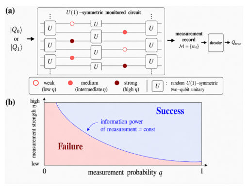
<figcaption class="paper-figure-caption"><b>Fig 1.</b> FIG. 1. Schematic of charge learnability in a monitored U(1)-symmetric quantum circuit and its phase diagram in terms of the measurement probability q and measurement strength η. (a) The circuit is initialized in one of two neigh- boring charge sectors. Random charge-conserving two-qubit gates are arranged in alternating even- and odd-bond lay- ers, each followed by a probabilistic local weak-measurement layer. The resulting spacetime record is processed by a de- coder to infer the hidden charge label. (b) A transition bound- ary separates the failure and success regimes and is organized by the measurement informational power.</figcaption>
</figure>
<figure class="paper-figure-card">
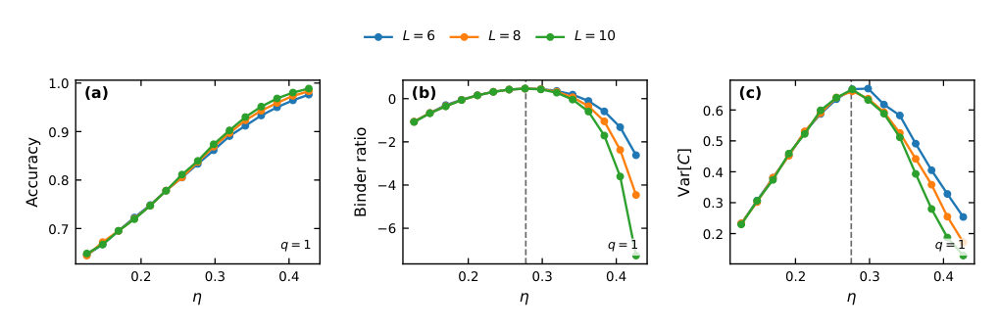
<figcaption class="paper-figure-caption"><b>Fig 2.</b> FIG. 2. Finite-size diagnostics for the unbiased decoder at measurement probability q = 1, with measurement strength η varied along the horizontal axis. The representative condition Iloc ≃0.20 predicts η0 ≃0.277. (a) Decoding accuracy. (b) Binder ratio of the binary posterior entropy. (c) Cross-entropy variance Var(C). The vertical dashed line marks the selected Binder crossing or variance peak.</figcaption>
</figure>
<figure class="paper-figure-card">
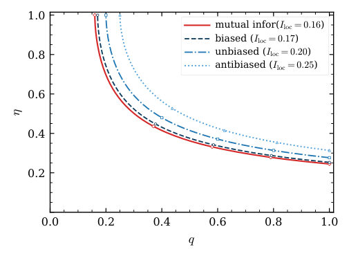
<figcaption class="paper-figure-caption"><b>Fig 3.</b> FIG. 4. Decoder-independent and decoder-dependent charge-learnability boundaries in the plane of measurement probability q and measurement strength η. The red solid curve denotes the decoder-independent finite-size boundary inferred from the exact record–label mutual information, Iloc ≃0.16. The three blue curves denote the biased, un- biased, and antibiased transition estimates, with Iloc ≃0.17, 0.20, and 0.25, respectively. Open markers indicate represen- tative finite-size scan points. All curves satisfy qIread(η) = Iloc.</figcaption>
</figure>
<figure class="paper-figure-card">
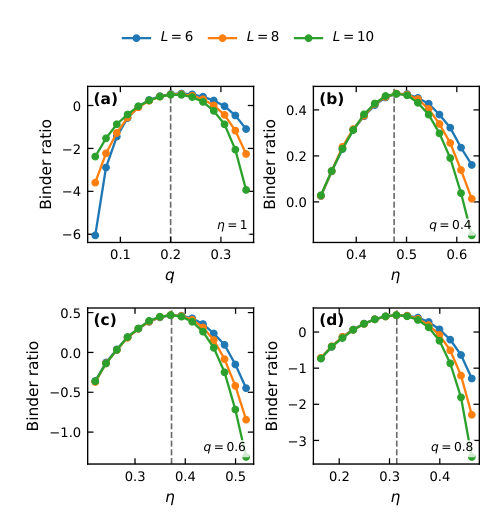
<figcaption class="paper-figure-caption"><b>Fig 4.</b> FIG. 3. Binder-ratio tests for the unbiased decoder along the representative line Iloc ≃0.20. (a) Measurement-probability scan at the projective limit η = 1, with predicted transition q0 = 0.20. (b)–(d) Measurement-strength scans at fixed q = 0.40, 0.60, and 0.80, with predicted transitions η0 = 0.480, 0.371, and 0.314, respectively. The vertical dashed lines mark the selected finite-size Binder crossings.</figcaption>
</figure>
<figure class="paper-figure-card">
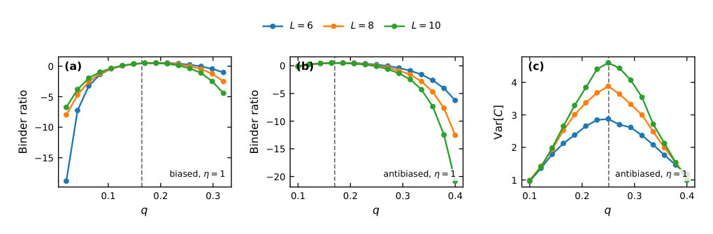
<figcaption class="paper-figure-caption"><b>Fig 5.</b> FIG. 5. Finite-size decoder diagnostics in the projective limit η = 1, with the measurement probability q varied along the horizontal axis. (a) For the biased decoder, the posterior-entropy Binder ratio locates the transition near q0 ≃0.17. (b) For the antibiased decoder, the same label-blind diagnostic gives an apparent estimate near q0 ≃0.17. (c) The label-sensitive cross-entropy variance Var(C) instead peaks near q0 ≃0.25. Vertical dashed lines mark the selected crossings or peak.</figcaption>
</figure>
</div>

<p><strong>Summary.</strong> This paper analyzes how reliably one can infer a conserved charge in a quantum circuit by monitoring it using weak measurements. The authors demonstrate that the transition point where inference becomes possible is fundamentally governed by the local informational power extracted during the measurement process. This establishes a unified theoretical principle linking different types of quantum monitoring protocols.</p>
<p><strong>Why it may be interesting.</strong> It provides a rigorous framework connecting fundamental concepts from quantum information theory (mutual information) with physical observables in open quantum systems (measurement records), which is highly relevant for understanding measurement-induced dynamics and control.</p>
<details>
<summary>Detailed structure</summary>
<p><strong>Main problem.</strong> The research extends the study of charge learnability transitions from standard projective measurements to probabilistic weak measurements in quantum circuits.</p>
<p><strong>Main result.</strong> The learnability phase boundary is shown to be organized by the local informational power of the measurement, providing a unifying principle across different monitoring protocols.</p>
<p><strong>Method.</strong> The authors use Bayesian decoding techniques and calculate various information-theoretic measures, including cross entropy and record–label mutual information, to diagnose charge inference capability.</p>
<p><strong>Model / system.</strong> The system is a one-dimensional U(1)-symmetric quantum circuit (chain of L qubits) evolving under random charge-conserving two-qubit gates. Monitoring involves probabilistic weak measurements controlled by probability (q) and strength (eta).</p>
<p><strong>Key observables.</strong> Charge learnability, Cross Entropy, Record–Label Mutual Information, Binder Ratio.</p>
<p><strong>Important parameters / regimes.</strong> Measurement probability ($q$) and measurement strength ($\eta$); the local informational power $I_{	ext{loc}}(q, \eta)$.</p>
<p><strong>Assumptions / limitations.</strong> The analysis compares different decoder variants (unbiased, biased, antibiased) to isolate the fundamental information limit from decoding efficiency.</p>
<p><strong>Figures summary.</strong> Figures illustrate phase diagrams showing how transition boundaries are organized by constant values of local informational power ($I_{	ext{loc}}$), comparing results across various decoders and measurement regimes.</p>
<p><strong>Paper structure.</strong> The paper progresses by first defining the weak measurement protocol, then introducing multiple diagnostic tools (cross-entropy, mutual information) to characterize learnability, ultimately establishing the role of local informational power as the unifying organizing principle for the transition boundary.</p>
</details>
<details>
<summary>Abstract</summary>
<p>Charge-learnability transitions in monitored symmetric quantum circuits reveal how local measurement records acquire sufficient information to infer a conserved charge. Here we extend charge learnability to probabilistic weak measurements, for which the measurement probability and measurement strength are independently tunable. We find that the learnability phase boundary is organized by the informational power of local measurement. We further introduce cross entropy as a label-sensitive diagnostic that distinguishes unbiased, biased, and antibiased decoder variants. Finally, the exact record--label mutual information provides a decoder-independent benchmark for the information fundamentally available for charge inference. Our results establish informational power of local measurement as a unifying principle for charge learnability under general monitoring protocols.</p>
</details>
<p><sub><a href="#top">↑ back to top</a></sub></p>

<p><a id="paper-2607.16561"></a></p>
<h3 id="glauber-dynamics-phase-transitions-in-athermal-random-field-blume-capel-and-blume-emery-grifitths-models"><a href="http://arxiv.org/abs/2607.16561v1">Glauber dynamics phase transitions in athermal random field Blume-Capel and Blume-Emery-Grifitths models</a></h3>
<p><strong>Authors:</strong> Sumedha, Aldrin B E<br>
<strong>Type:</strong> theory · <strong>Category:</strong> statistical mechanics · <strong>PDF:</strong> <a href="https://arxiv.org/pdf/2607.16561v1">https://arxiv.org/pdf/2607.16561v1</a><br>
<strong>Analysis basis:</strong> full PDF text, analyzed in chunks
<strong>Topic relevance:</strong> 🔥 <code>non-equilibrium dynamics</code> <strong>4/5</strong> · 🔥 <code>non-equilibrium universality</code> <strong>4/5</strong> · <code>driven-dissipative phase transition</code> <strong>3/5</strong> · <code>methods for driven-dissipative</code> <strong>3/5</strong> · <code>Keldysh / 2PI / non-Gaussian methods</code> <strong>1/5</strong> · <code>correlated / nonlocal dissipation</code> <strong>1/5</strong></p>
<div class="figure-strip-hint">↔ Scroll figures horizontally</div>
<div class="paper-figures-scroll">
<figure class="paper-figure-card">
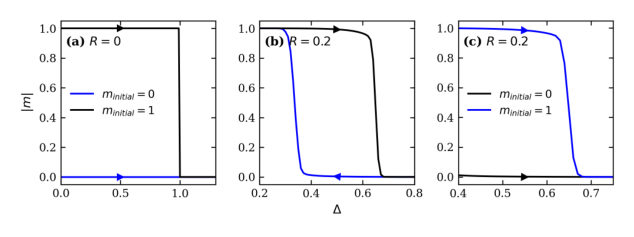
<figcaption class="paper-figure-caption"><b>Fig 1.</b> FIG. 1: Plot of steady state magnetisation(|m|) as a function of ∆, with ∆increased quasi-statically. a) No disorder case with R = 0 for two initial states:m = 0 and |m| = 1 with increasing ∆from ∆= 0. For m = 0 initial condition the system continues to stay in m = 0 state for all values of ∆, whereas for m = 1 initial condition there is a first order transition to m = 0 at ∆= 1; b) For R = 0.2 system is evolved from m = 1 initial state at ∆= 0. This state transitions to m = 0 state at ∆≈0.64. On the other hand the state with m = 0 at ∆= 1 on decreasing ∆transitions to m = 1 at ∆≈0.33 ; c) For R = 0.2 and starting at ∆= 0.4 while the m = 0 initial state continues to be m = 0 with increasing...</figcaption>
</figure>
<figure class="paper-figure-card">
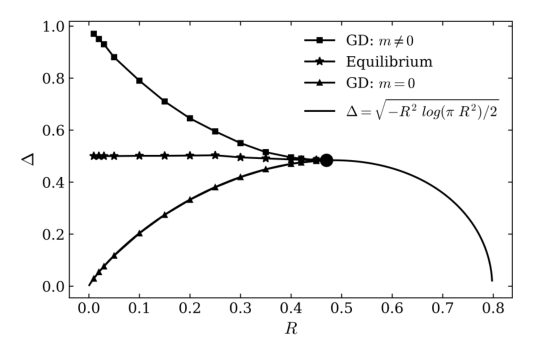
<figcaption class="paper-figure-caption"><b>Fig 2.</b> FIG. 2: Phase diagram of RFBCM under Glauber dynamics with initial state m = 1 and m = 0 and the equilibrium phase diagram are shown. The black solid circle represents the tricritical point with Rtcp = ∆tcp = 0.483. For R ≥Rtcp, the three phase diagrams coincide and there is a continuous transition between m = 0 and m ̸= 0 states. On the other hand for R &lt; Rtcp, even though the nature of the transition ( first order ) is the same in all the cases, the point of transition are different.</figcaption>
</figure>
<figure class="paper-figure-card">
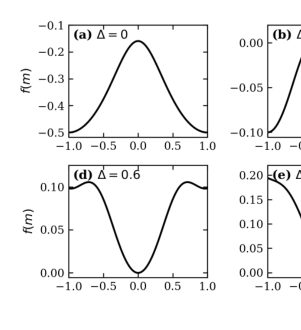
<figcaption class="paper-figure-caption"><b>Fig 3.</b> FIG. 3: For R = 0.2, the function f(m) is plotted for few representative values of ∆.</figcaption>
</figure>
<figure class="paper-figure-card">
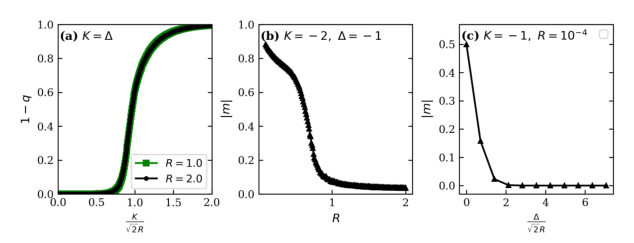
<figcaption class="paper-figure-caption"><b>Fig 4.</b> FIG. 4: Plots for RFBEGM Glauber steady state with K ≤∆for : a) For K = ∆we plot 1−q as a function of K/ √</figcaption>
</figure>
<figure class="paper-figure-card">
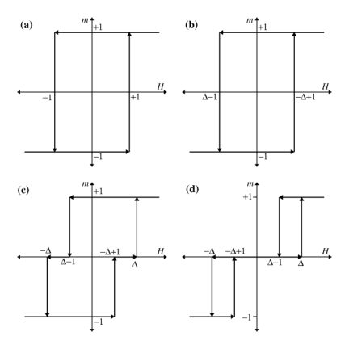
<figcaption class="paper-figure-caption"><b>Fig 5.</b> FIG. 5: Different shapes of hysteresis loops in m−H plane for Blume-Capel model that depend on the value of the crystal field ∆ : a) ∆≤0 : rectangular with the coercive field (Hc) independent of the value of ∆; b) 0 &lt; ∆≤0.5 : Rectangular with ; Hc = ±(∆−1) c) 0.5 &lt; ∆&lt; 1 : Wasp waisted with Hc = ±(∆−1) and ±∆and d) ∆&gt; 1 : Double rectangular with Hc = ±(∆−1) and ±∆.</figcaption>
</figure>
</div>

<p><strong>Summary.</strong> This paper investigates the phase transitions of random field spin models (Blume-Capel and Blume-Emery-Griffiths) by comparing their equilibrium behavior with non-equilibrium steady states reached via Glauber dynamics. Key findings include a critical disorder strength ($R_c$) beyond which the dynamics match equilibrium, and the observation of complex, path-dependent hysteresis loops whose shapes are analytically derived.</p>
<p><strong>Why it may be interesting.</strong> The comparison between equilibrium and non-equilibrium phase transitions in disordered systems is a fundamental topic in statistical mechanics, providing insights into aging and memory effects relevant to complex materials.</p>
<details>
<summary>Detailed structure</summary>
<p><strong>Main problem.</strong> The study compares phase transitions between equilibrium states and non-equilibrium steady states governed by Glauber dynamics in random field spin models.</p>
<p><strong>Main result.</strong> For low disorder, the non-equilibrium steady state depends on initial conditions, but beyond a critical disorder variance ($R_c$), it coincides with the equilibrium state. The system exhibits rich hysteresis loops whose shapes are determined by zero-disorder behavior.</p>
<p><strong>Method.</strong> The authors solve self-consistent equations for order parameters and use large deviation principles to analyze the free energy functional for equilibrium, contrasting this with direct analysis of the Glauber steady state dynamics.</p>
<p><strong>Model / system.</strong> The models analyzed are the Random Field Blume-Capel (RFBCM) and Random Field Blume-Emery-Griffiths (RFBEGM) models, which are three-state spin systems ($\sigma_i \in \{+1, -1, 0\}$). The dynamics follow Glauber single spin-flip rules at zero temperature.</p>
<p><strong>Key observables.</strong> Magnetization ($m$), quadrupole moment ($q$), critical disorder variance ($R_c$), and the shape/area of hysteresis loops in the $m-H$ plane.</p>
<p><strong>Important parameters / regimes.</strong> Disorder variance ($R$), crystal field ($\Delta$), bi-quadratic coupling ($K$), and external magnetic field ($H$).</p>
<p><strong>Assumptions / limitations.</strong> The analysis is performed at zero temperature ($T=0$) to study the non-equilibrium steady state, which breaks detailed balance.</p>
<p><strong>Figures summary.</strong> Figures illustrate $m-H$ phase diagrams showing hysteresis loops with various shapes (rectangular, hexagonal, etc.) that vanish as disorder increases past $R_c$, and show path dependence in the BEGM model.</p>
<p><strong>Paper structure.</strong> The paper systematically compares equilibrium calculations (using LDP) against non-equilibrium steady state solutions derived from Glauber dynamics for both RFBCM and RFBEGM, detailing how different coupling regimes lead to distinct transition behaviors and hysteresis patterns.</p>
</details>
<details>
<summary>Abstract</summary>
<p>We solve the two models for Glauber dynamics and in equilibrium, both in the presence and absence of the external magnetic field on a complete graph. We compare the steady state of the Glauber dynamics with equilibrium and find that for low values of variance $R$ of the Gaussian random field, the steady state of the Glauber dynamics depends on the initial state. Beyond a critical value $R_{c}$ the equilibrium and non equilibrium steady states coincide. The variance $R$ in random field models behaves similar to the temperature. The location of both the continuous and first order transitions can be obtained exactly for the Glauber dynamics steady state. The frustration is introduced by considering repulsive bi-quadratic interaction for Blume-Emery-Griffiths model. We also. consider repulsive bi-quadratic interaction and show that $R_c$ can become zero depending on the value of the crystal field. Interestingly, we also find that even when a system has $R_c=0$ at the start of quasi-static evolution with Glauber dynamics, with increasing $R$, in some regime of the couplings, the model undergoes a crossover to a random field Ising model universaility with $R_c$ changing from $0$ to $\sqrt{\frac{2}π}$. In the presence of uniform magnetic field, regions of first order transition exhibit hysteresis under Glauber dynamics. These models exhibit rectangular, hexagonal, parallelogram, wasp-waisted, and double hysteresis loops. We derive the shapes of hysteresis loops analytically giving the equation for the value of the coercive field and show that while the area under the hysteresis loop depends on $R$, the shape is determined by the behavior of the models at $R=0$. In particular, in the case of Blume-Emery-Griffiths model the hysteresis plots have regions of continuous and first order transitions both, resulting in a rich phase diagram that depends non-trivially on the initial state.</p>
</details>
<p><sub><a href="#top">↑ back to top</a></sub></p>

<p><a id="paper-2607.17204"></a></p>
<h3 id="heralded-leakage-detection-with-preserved-computational-state-coherence-in-a-fixed-frequency-transmon"><a href="http://arxiv.org/abs/2607.17204v1">Heralded Leakage Detection with Preserved Computational-State Coherence in a Fixed-Frequency Transmon</a></h3>
<p><strong>Authors:</strong> Takeaki Miyamura, Zhiling Wang, Peter A. Spring, Hiroto Mukai, Kohei Matsuura, Jesper Ilves, Yoshiki Sunada, Yasunobu Nakamura<br>
<strong>Type:</strong> experiment · <strong>Category:</strong> quantum information and computing · <strong>PDF:</strong> <a href="https://arxiv.org/pdf/2607.17204v1">https://arxiv.org/pdf/2607.17204v1</a><br>
<strong>Analysis basis:</strong> full PDF text, analyzed in chunks
<strong>Topic relevance:</strong> 🔥 <code>QC/QI experiment</code> <strong>4/5</strong> · <code>quantum measurements</code> <strong>3/5</strong> · <code>Tavis-Cummings &amp; cavity-many-emitter</code> <strong>2/5</strong> · <code>measurement-induced transitions</code> <strong>2/5</strong> · <code>correlated / nonlocal dissipation</code> <strong>1/5</strong> · <code>correlated cavity matter</code> <strong>1/5</strong> · <code>driven-dissipative phase transition</code> <strong>1/5</strong> · <code>methods for driven-dissipative</code> <strong>1/5</strong> · <code>quantum optics experiment</code> <strong>1/5</strong></p>
<div class="figure-strip-hint">↔ Scroll figures horizontally</div>
<div class="paper-figures-scroll">
<figure class="paper-figure-card">
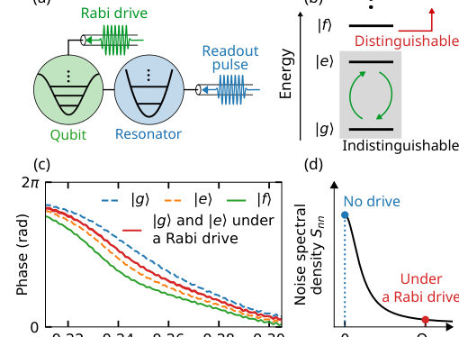
<figcaption class="paper-figure-caption"><b>Fig 1.</b> FIG. 1. (a) Scheme of the leakage-detection protocol. (b) Energy-level diagram of the qubit. When the computa- tional subspace is driven with sufficient power, the states |g⟩ and |e⟩cannot be distinguished, while the higher states such as |f⟩can be detected through dispersive readout. (c) Mea- sured resonator phase response as a function of the readout frequency for |g⟩(blue dashed), |e⟩(orange dashed), |f⟩(green solid), and the computational subspace under the Rabi drive of strength Ωq/2π = 74 MHz (red solid). (d) Illustration of the photon-number noise spectral density Snn(ω). The blue (red) dot indicates the case without (with) a Rabi drive.</figcaption>
</figure>
<figure class="paper-figure-card">
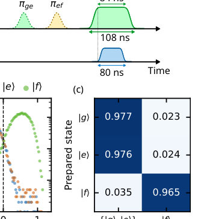
<figcaption class="paper-figure-caption"><b>Fig 2.</b> FIG. 3. (a) Pulse sequence for the leakage detection experi- ment. (b) Single-shot readout histograms for prepared states |g⟩(blue), |e⟩(orange), and |f⟩(green). The dashed line indi- cates the classification threshold. (c) Assignment matrix for binary {|g⟩, |e⟩} or |f⟩classification.</figcaption>
</figure>
<figure class="paper-figure-card">
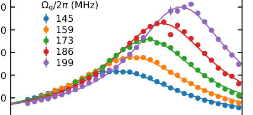
<figcaption class="paper-figure-caption"><b>Fig 3.</b> FIG. 2. (a) Pulse sequence to measure Rabi oscillations under a simultaneous probe pulse. A qubit drive at frequency ωd = ωeg + δ and a readout pulse are applied concurrently for a duration t, followed by a standard dispersive measurement. (b) Observed Rabi oscillations with drive strength Ωq/2π = 186 MHz, drive detuning δ/2π = −20 MHz, and mean photon number ¯n = 2.41. The red curve is the exponential fit of the envelope, from which the decay time TRabi is extracted. (c) TRabi as a function of the drive detuning δ for different drive strengths Ωq at ¯n = 2.41. Solid lines are the Lorentzian fits. Data points affected by a spurious mode are omitted.</figcaption>
</figure>
<figure class="paper-figure-card">
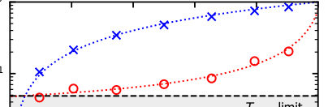
<figcaption class="paper-figure-caption"><b>Fig 4.</b> FIG. 4. (a) Pulse sequence for the leakage detection and post- selection experiment. (b) Real part of the density matrix for the prepared state (|f⟩⟨f| + |+⟩⟨+|)/2. (c) Real part of the density matrix after leakage detection and conditioning on the {|g⟩, |e⟩} outcome, starting from the same initial state shown in (b). (d) Pauli transfer matrix R of the leakage detection for the |g⟩–|e⟩subspace, measured at pf = 0.5. (e) Average state infidelity 1 −¯F as a function of |f⟩-state population pf. Blue dotted curve and crosses are theoretical prediction and the experimental results without leakage detection. Red dotted curve and circles are with leakage detection and conditioning on the...</figcaption>
</figure>
</div>

<p><strong>Summary.</strong> The paper introduces a novel technique to detect leakage out of the computational subspace in transmon qubits during readout. By applying a specific Rabi drive, the authors make the desired computational states invisible to the measurement probe while allowing higher-energy leakage states to be detected. This method achieves high fidelity error flagging while minimizing back-action on the encoded quantum information.</p>
<p><strong>Why it may be interesting.</strong> This work directly addresses fundamental limitations in superconducting quantum hardware by providing a robust, non-invasive method for monitoring leakage errors, which is crucial for scaling up quantum computation.</p>
<details>
<summary>Detailed structure</summary>
<p><strong>Main problem.</strong> Leakage out of the computational subspace is a major error source in superconducting quantum processors, requiring detection without disturbing encoded quantum information.</p>
<p><strong>Main result.</strong> The authors achieved a leakage-detection fidelity of 97.1% while preserving high coherence (92.9% average state fidelity) on the remaining computational states.</p>
<p><strong>Method.</strong> They apply a tailored Rabi drive during dispersive readout, which makes computational states indistinguishable to the probe while leaving higher excited leakage states distinguishable.</p>
<p><strong>Model / system.</strong> The system is a fixed-frequency transmon qubit coupled dispersively to a readout resonator (Circuit-QED). The analysis treats the system in at least a qutrit subspace ($\{|g
angle, |e
angle, |f
angle\}$).</p>
<p><strong>Key observables.</strong> Leakage-detection fidelity ($F_d$), false-flag rate ($\epsilon_{FF}$), post-detection average state fidelity ($ar{F}$), and Rabi oscillation decay time ($T_{	ext{Rabi}}$).</p>
<p><strong>Important parameters / regimes.</strong> Detection window (80 ns), qubit anharmonicity, drive detuning ($\delta$), and coupling strengths ($\chi$).</p>
<p><strong>Assumptions / limitations.</strong> The protocol requires no flux tunability or additional hardware components beyond standard dispersive readout elements.</p>
<p><strong>Figures summary.</strong> Figures illustrate the Rabi pulse sequence for characterization (measuring $T_{	ext{Rabi}}$) and the scheme itself, showing how the drive makes computational states invisible to the probe while leakage states remain visible.</p>
<p><strong>Paper structure.</strong> The paper details the physical problem of measurement back-action, introduces the specific Rabi driving protocol to selectively couple/decouple subspaces, presents quantitative measurements of fidelity and coherence preservation, and discusses error decomposition.</p>
</details>
<details>
<summary>Abstract</summary>
<p>Leakage out of the computational subspace is a major error mechanism in superconducting quantum processors. Detecting leakage without disturbing the encoded quantum information can provide a heralded error signal that error-correction decoders exploit. However, standard dispersive readout collapses all qubit eigenstates indiscriminately. Here, we demonstrate heralded leakage detection on a fixed-frequency transmon by applying a Rabi drive on the computational transition during dispersive readout. The drive makes the computational states indistinguishable to the probe on the resonator while leaving the second and higher excited states distinguishable from the computational states. We achieve a leakage-detection fidelity of 97.1(3)% within the 80-ns detection window, with a false-flag rate of 2.3(3)% from the computational subspace. Conditioned on the no-leakage outcome, the post-detection state retains an average fidelity of 92.9(5)% across the six cardinal states for an equal mixture of computational and leakage population. The scheme requires no circuit elements beyond those used for standard dispersive readout, making it applicable to various types of superconducting qubits without hardware modification.</p>
</details>
<p><sub><a href="#top">↑ back to top</a></sub></p>

<p><a id="paper-2607.16500"></a></p>
<h3 id="observation-of-critical-current-minimum-in-super-honeycomb-josephson-junction-arrays"><a href="http://arxiv.org/abs/2607.16500v1">Observation of Critical Current Minimum in Super-Honeycomb Josephson Junction Arrays</a></h3>
<p><strong>Authors:</strong> Melissa Mikalsen, Alexander-Georg Penner, Samuel D. Escribano, Nadav Drechsler, Arunav Bordoloi, Jacob Issokson, Felix von Oppen, Yuval Oreg, Javad Shabani<br>
<strong>Type:</strong> both · <strong>Category:</strong> other · <strong>PDF:</strong> <a href="https://arxiv.org/pdf/2607.16500v1">https://arxiv.org/pdf/2607.16500v1</a><br>
<strong>Analysis basis:</strong> full PDF text, analyzed in chunks
<strong>Topic relevance:</strong> 🔥 <code>analog quantum simulation</code> <strong>4/5</strong> · <code>exotic spin models in light-matter</code> <strong>3/5</strong> · <code>driven-dissipative phase transition</code> <strong>2/5</strong> · <code>non-equilibrium dynamics</code> <strong>2/5</strong> · <code>non-equilibrium universality</code> <strong>2/5</strong> · <code>Keldysh / 2PI / non-Gaussian methods</code> <strong>1/5</strong> · <code>methods for driven-dissipative</code> <strong>1/5</strong> · <code>spintronics-quantum-optics interface</code> <strong>1/5</strong></p>
<div class="figure-strip-hint">↔ Scroll figures horizontally</div>
<div class="paper-figures-scroll">
<figure class="paper-figure-card">
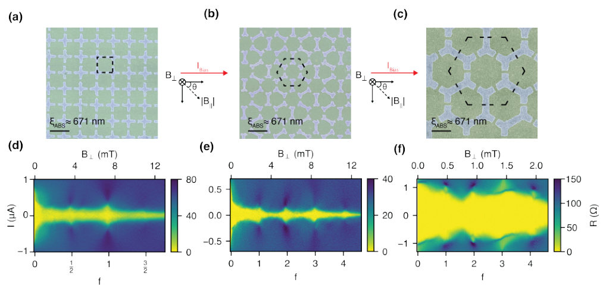
<figcaption class="paper-figure-caption"><b>Fig 1.</b> FIG. 1. Josephson junction arrays in perpendicular magnetic field. Scanning electron micrograph of a few plaquettes of a representative device for the square (a) and the super-honeycomb array with ξABS &gt; dJJ (b) and ξABS ≲dJJ (c). The superconductor (blue) and semiconductor (green) are falsely colored, the unit cell is outlined (dashed black line), and the scale bar is 671 nm. We plot the resistance as a function of current bias (I (µA) ) and frustration (f = B⊥AUC/Φ0) for the square (d) and the super-honeycomb array with ξABS &gt; dJJ (e) and ξABS ≲dJJ (f).</figcaption>
</figure>
<figure class="paper-figure-card">
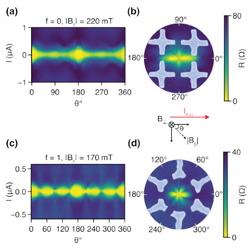
<figcaption class="paper-figure-caption"><b>Fig 2.</b> FIG. 2. In-plane magnetic field angle dependence of critical current. Resistance, R (Ω) as a function of current bias, I (µA), and angle of in-plane magnetic field, θ. Measure- ments for the square array were taken at f = 0, corresponding to B⊥= 0 mT, and a magnitude of in-plane field of B|| = 220 mT (a,b). For the super-honeycomb array, measurements were taken at f = 1, corresponding to B⊥= 2.802 mT, and a magnitude of in-plane field of B|| = 170 mT (c,d). The data from both array geometries is plotted on a polar plot with the corresponding representative unit cell SEM image over- laid. Only the data from the positive current bias is plotted on the polar plot for both the square array(b)...</figcaption>
</figure>
<figure class="paper-figure-card">
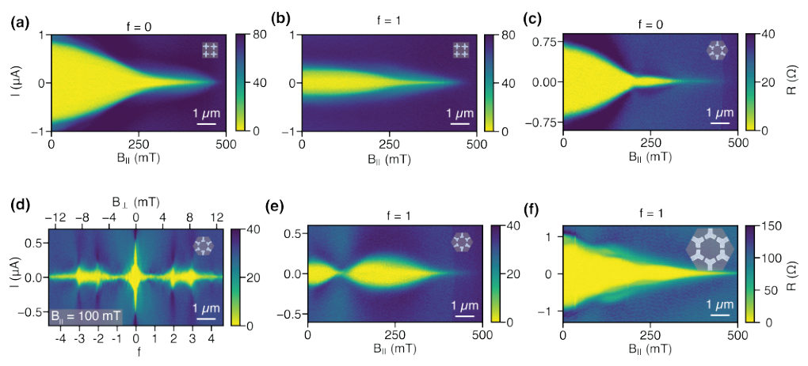
<figcaption class="paper-figure-caption"><b>Fig 3.</b> FIG. 3. Josephson junction arrays at finite frustration with in-plane magnetic field. Resistance as a function of current bias (I (µA)) and in-plane magnetic field pointing along θ = 0◦(B|| (mT)) for the square array at constant f = 0 (a) and f = 1 (b) and the ξABS &gt; dJJ super-honeycomb array at f = 0 (c) and f = 1 (e). Resistance as a function of current bias (I (µA)) and frustration (f = B⊥AUC/Φ0) for the super-honeycomb array at constant in-plane magnetic field, |B||(θ = 0◦)| = 100 mT (d). Resistance as a function of current bias (I (µA)) and in-plane magnetic field pointing along θ = 0◦(B|| (mT)) the ξABS ≲dJJ super-honeycomb array at f = 1 (f).</figcaption>
</figure>
<figure class="paper-figure-card">
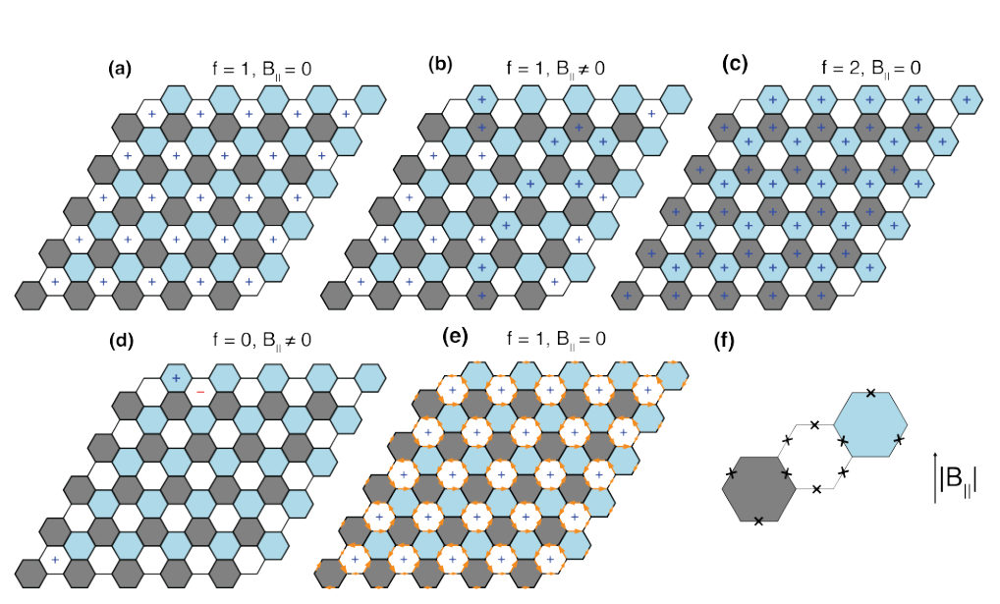
<figcaption class="paper-figure-caption"><b>Fig 4.</b> FIG. 4. Vortex configurations in Josephson junction arrays. Calculated vortex configurations, for a super-honeycomb Josephson junction array for f = 1 with B|| = 0 (a) and B|| = 0.6 (b), f =2 with B|| = 0 (c), and f = 0 wih B|| = 0.6 (d). Calculation of the current distribution in the array for f = 0 and B|| = 0, represented by orange arrows, magnitude of the arrows represent the relative magnitude of the current (e). White hexagons represent plaquettes with 6 junctions, blue and gray hexagons represent plaquettes with 3 junctions, an example unit cell is shown in (f). Blue plus symbols are vortices and red minus symbols are anti-vortices. The in-plane magnetic field is pointing...</figcaption>
</figure>
</div>

<p><strong>Summary.</strong> This work examines Josephson junction arrays in superconducting semiconductors to study collective quantum behavior influenced by magnetic fields. By comparing square and super-honeycomb geometries, the authors report observing a unique critical current minimum in the closely spaced super-honeycomb array at $f=1$. This finding suggests that long-range inter-junction hybridization is crucial for understanding vortex lattice stability beyond simple XY model predictions.</p>
<p><strong>Why it may be interesting.</strong> The study probes how geometric frustration and intrinsic spin-orbit coupling interact to create novel quantum signatures (like the critical current minimum) that deviate from standard mean-field models, relevant for understanding topological superconductivity.</p>
<details>
<summary>Detailed structure</summary>
<p><strong>Main problem.</strong> The study investigates collective quantum phenomena, specifically critical current behavior, in superconducting Josephson junction arrays under applied magnetic fields.</p>
<p><strong>Main result.</strong> A distinct critical current minimum is observed uniquely in the closely spaced super-honeycomb array at a specific flux filling factor ($f=1$), which cannot be explained by simple XY model physics alone.</p>
<p><strong>Method.</strong> The research combines magnetotransport measurements of critical current ($I_c$) with numerical simulations based on the frustrated 2D XY model.</p>
<p><strong>Model / system.</strong> The physical system is an Al-InAs Josephson junction array, studied in both square and super-honeycomb geometries. The physics is modeled using a frustrated XY Hamiltonian incorporating Andreev bound states (ABS) hybridization ($\xi_{ABS}>d_{JJ}$) and Rashba spin-orbit coupling.</p>
<p><strong>Key observables.</strong> Critical current ($I_c$), vortex localization patterns, resistance vs. bias/field measurements.</p>
<p><strong>Important parameters / regimes.</strong> Frustration factor ($f = B_{\perp}A_{uc}/\Phi_0$), in-plane field magnitude and angle ($ heta$, $B_{||}$), junction spacing relative to coherence length ($\xi_{ABS}/d_{JJ}$).</p>
<p><strong>Assumptions / limitations.</strong> The simple XY model is insufficient, necessitating the inclusion of long-range inter-junction hybridization effects for accurate description.</p>
<p><strong>Figures summary.</strong> Figures show SEM images of the arrays and plots detailing $I_c$ vs. perpendicular field (showing vortex peaks) and $R$ vs. $I$ dependence on in-plane field angle ($ heta$) or magnitude ($B_{||}$), highlighting geometry-dependent features.</p>
<p><strong>Paper structure.</strong> The paper establishes the platform, compares different geometries (square vs. super-honeycomb), analyzes vortex localization via out-of-plane fields, and then investigates the unique $I_c$ minimum induced by in-plane fields, contrasting theoretical model limitations with experimental observations.</p>
</details>
<details>
<summary>Abstract</summary>
<p>Superconductor-semiconductor Josephson junction arrays are a uniquely tunable platform for studying collective quantum phenomena, particularly in the regime where localized Andreev bound states can hybridize across the lattice when the physical separation between adjacent junctions is smaller than their coherence length ($ξ_{\text{ABS}}>d_{\text{JJ}}$). Here, we investigate three distinct Al-InAs Josephson junction arrays: a square array and super-honeycomb array fabricated within this ${ξ_{\text{ABS}}>d_{\text{JJ}}}$ regime, as well as a larger-spacing super-honeycomb control device designed such that $ξ_{\text{ABS}}\lesssim\!~d_{\text{JJ}}$. Under an out-of-plane field, critical current peaks emerge at rational filling factors, reflecting stable vortex configurations in the lattices. In the super-honeycomb lattice, vortices localize to distinct non-identical plaquettes at different filling factors, as predicted by frustrated XY model simulations. A rotating in-plane field yields periodic critical current oscillations that reflect the Rashba spin-orbit coupling inherent to the InAs quantum well. Surprisingly, at $f = 1$, the closely spaced super-honeycomb array exhibits a distinct critical current minimum as the magnitude of the in-plane field increases, a signature absent in the square array and large-spacing super-honeycomb array. These results indicate that this signature is jointly influenced by the unique geometry of the super-honeycomb vortex lattice and by long-range inter-junction hybridization.</p>
</details>
<p><sub><a href="#top">↑ back to top</a></sub></p>

<p><a id="paper-2607.17618"></a></p>
<h3 id="spatial-nonlocality-imaging-via-metasurface"><a href="http://arxiv.org/abs/2607.17618v1">Spatial nonlocality imaging via metasurface</a></h3>
<p><strong>Authors:</strong> Jian Li, Zi-Mu Fan, Qing-Yuan Wu, Wen-Kai Yu, Zhe Meng, Xing-Yan Fan, Wen-Hao Wang, Jie Ma, Xia Guo, An-Ning Zhang<br>
<strong>Type:</strong> both · <strong>Category:</strong> quantum information and computing · <strong>PDF:</strong> <a href="https://arxiv.org/pdf/2607.17618v1">https://arxiv.org/pdf/2607.17618v1</a><br>
<strong>Analysis basis:</strong> full PDF text, analyzed in chunks
<strong>Topic relevance:</strong> 🔥 <code>entanglement &amp; information structure</code> <strong>4/5</strong> · <code>interference shaping light</code> <strong>3/5</strong> · <code>quantum optics experiment</code> <strong>3/5</strong> · <code>QC/QI experiment</code> <strong>2/5</strong> · <code>quantum measurements</code> <strong>2/5</strong> · <code>measurement-induced transitions</code> <strong>1/5</strong> · <code>methods for driven-dissipative</code> <strong>1/5</strong></p>
<div class="figure-strip-hint">↔ Scroll figures horizontally</div>
<div class="paper-figures-scroll">
<figure class="paper-figure-card">
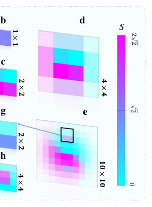
<figcaption class="paper-figure-caption"><b>Fig 1.</b> Fig. 1 Spatial-resolution–dependent manifestation of quantum nonlocality. a, simulated bipartite entangled field distribution resembling the Taiji-like spatial pattern, where blue regions show no detectable Bell violation (S = 0), magenta regions exhibit Bell violation (S = 2 √</figcaption>
</figure>
<figure class="paper-figure-card">
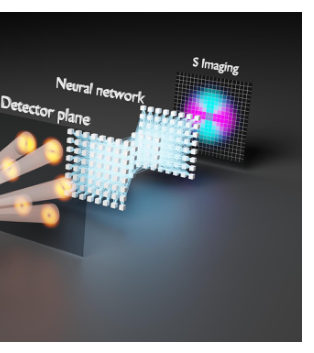
<figcaption class="paper-figure-caption"><b>Fig 2.</b> Fig. 2 Spatially resolved reconstruction of quantum nonlocality using a metasurface and quantum-swin fusion network (Quantum-SFNet). A spatially structured entangled photon field is incident on a polarization-analyzing metasurface, which spatially separates Alice’s photons according to their Pauli measurement outcomes. The resulting polarization-resolved intensity patterns are projected onto a detection plane and recorded together with photon arrival times and output-port information. From these sparse, photon-limited measurement data, a neural network (Quantum- SFNet) reconstructs the spatial distribution of CHSH nonlocality, producing a pixel-resolved CHSH S map of the entangled field. It...</figcaption>
</figure>
<figure class="paper-figure-card">
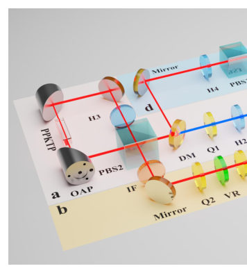
<figcaption class="paper-figure-caption"><b>Fig 3.</b> Fig. 3 Experimental setup for spatially resolved nonlocality imaging. The setup comprises four modules: source preparation, spatial encoding, and detection (Alice and Bob). a, Source Prepa- ration (white zone): a 405-nm continuous-wave laser pumps a Sagnac interferometric loop containing a PPKTP crystal, producing polarization-entangled photon pairs 1 √</figcaption>
</figure>
<figure class="paper-figure-card">
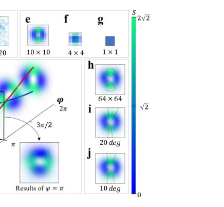
<figcaption class="paper-figure-caption"><b>Fig 4.</b> Fig. 4 Experimental reconstruction and image-based analysis of spatially distributed Bell nonlocality. a, theoretical CHSH parameter (S-value) distribution of the prepared spatially structured polarization–OAM hybrid entangled states. b, raw photon-count data (intensity maps) recorded under ultralow-photon conditions (average of 1.70 coincidence pairs per pixel per projection configuration); no spatial structure is discernible. c, direct CHSH parameter reconstruction from raw data without neural-network enhancement; severe statistical fluctuations completely obscure the underlying nonlocality. d, Simulated and experimentally reconstructed spatial CHSH distributions for different...</figcaption>
</figure>
<figure class="paper-figure-card">
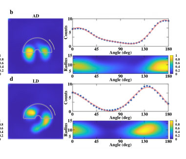
<figcaption class="paper-figure-caption"><b>Fig 5.</b> Fig. 5 Reconstruction of Bell-type nonlocality via Quantum-SFNet-assisted imaging. a– d, Experimental results under four distinct two-photon polarization bases (ΠA = A, L; ΠB = A, D). The left panels display the normalized 2D spatial intensity maps output by the neural network. The red annular boundaries define the region of interest (ROI), with the solid red line marking the azimuthal zero-angle reference (θ = 0◦). The bottom-right panels show the corresponding unwrapped polar-to-Cartesian intensity distributions (Radius vs. θ). The top-right panels plot the integrated angular coincidence counts (blue dots) along with their sinusoidal fits (red curves). Using the corre- lated intensities...</figcaption>
</figure>
</div>

<p><strong>Summary.</strong> The paper introduces a novel 'spatial nonlocality imaging' technique to overcome the measurement cost barrier when testing Bell inequalities across large entangled fields. By integrating metasurfaces for parallel projections and using a specialized neural network, they can map the spatial distribution of quantum nonlocality with unprecedented resource efficiency. This opens new avenues for practical, large-scale photonic quantum technologies.</p>
<p><strong>Why it may be interesting.</strong> This work provides a crucial pathway toward scaling up entanglement verification in photonic systems by replacing resource-intensive sequential measurements with parallel, data-driven reconstruction techniques, which is highly relevant to scalable quantum communication protocols.</p>
<details>
<summary>Detailed structure</summary>
<p><strong>Main problem.</strong> The primary challenge is visualizing and certifying spatial nonlocality (Bell nonlocality) across large, spatially multimode photonic fields due to the prohibitive measurement cost of traditional projective tests.</p>
<p><strong>Main result.</strong> The authors developed a resource-efficient imaging scheme that successfully maps the two-dimensional spatial distribution of Bell violations using metasurfaces and neural networks, demonstrating high fidelity even with few detected coincidence pairs.</p>
<p><strong>Method.</strong> The approach combines hardware parallelization via a metasurface for simultaneous Pauli projections with a quantum-adaptive neural network (Quantum-SFNet) to reconstruct spatially resolved CHSH parameters from sparse data.</p>
<p><strong>Model / system.</strong> The system utilizes bipartite entangled states, specifically polarization-OAM hybrid entangled biphotons generated via SPDC. The measurement process involves mapping multiple Pauli measurements onto distinct spatial locations on a detector plane.</p>
<p><strong>Key observables.</strong> Bell nonlocality (CHSH parameter $S$), the spatial distribution of Bell violations across the optical field, and reconstructed density matrices ($
ho$).</p>
<p><strong>Important parameters / regimes.</strong> Low photon resource requirements (e.g., $\sim 1.7$ coincidence pairs per pixel per basis), high spatial resolution (400-pixel field).</p>
<p><strong>Assumptions / limitations.</strong> The method assumes that the measured state can be accurately reconstructed from sparse, spatially resolved measurements using physics-informed machine learning constraints.</p>
<p><strong>Figures summary.</strong> Figures illustrate the recovery of nonlocality patterns as spatial resolution increases, contrasting coarse (no violation) vs. fine (clear violation) detection regimes. Other figures detail the experimental setup involving metasurfaces and network reconstruction results.</p>
<p><strong>Paper structure.</strong> The paper progresses from identifying the resource scaling bottleneck in Bell testing to proposing a hybrid hardware/ML imaging scheme. It then details the implementation using specific entangled states, validates the method by showing state tomography fidelity metrics (MSE, SSIM, Trace Distance), and concludes with implications for quantum networking.</p>
</details>
<details>
<summary>Abstract</summary>
<p>Bell nonlocality is both a defining signature of entanglement and a key quantum information resource. However, visualizing and certifying nonlocal correlations across a spatially multimode photonic field remains challenging due to the rapidly growing measurement cost of spatially resolved projective tests. To address this issue, we build a spatial nonlocality imaging scheme that directly reveals the spatial distribution of quantum nonlocality by integrating a metasurface that performs parallel polarization projections with a quantum-adaptive neural network. Spatially resolved Clauser--Horne--Shimony--Holt (CHSH) tests are realized over a 400-pixel biphoton field using an average of only 1.7 detected coincidence pairs per pixel per basis. This approach yields a nonlocality image that maps the two-dimensional spatial distribution of Bell violations across the optical field and reveals the target-state-dependent spatial evolution of Bell violations. It provides a highly resource-efficient route to large-scale Bell certification and opens new possibilities for exploiting spatially multimode entanglement in quantum imaging, quantum networking, and scalable photonic quantum technologies.</p>
</details>
<p><sub><a href="#top">↑ back to top</a></sub></p>

<p><a id="paper-2607.16520"></a></p>
<h3 id="bridging-relativistic-twisted-fermion-beams-and-photonic-oam-flux-in-gauged-hopf-lattices-emergent-topological-analogs"><a href="http://arxiv.org/abs/2607.16520v1">Bridging Relativistic Twisted Fermion Beams and Photonic OAM Flux in Gauged Hopf Lattices: Emergent Topological Analogs</a></h3>
<p><strong>Authors:</strong> Aaron Michael Kinder<br>
<strong>Type:</strong> theory · <strong>Category:</strong> other · <strong>PDF:</strong> <a href="https://arxiv.org/pdf/2607.16520v1">https://arxiv.org/pdf/2607.16520v1</a><br>
<strong>Analysis basis:</strong> full PDF text, analyzed in chunks
<strong>Topic relevance:</strong> 🔥 <code>analog quantum simulation</code> <strong>4/5</strong> · <code>methods for driven-dissipative</code> <strong>3/5</strong> · <code>non-equilibrium dynamics</code> <strong>2/5</strong> · <code>correlated / nonlocal dissipation</code> <strong>1/5</strong> · <code>driven-dissipative phase transition</code> <strong>1/5</strong> · <code>entanglement &amp; information structure</code> <strong>1/5</strong> · <code>exotic spin models in light-matter</code> <strong>1/5</strong> · <code>interference shaping light</code> <strong>1/5</strong> · <code>non-equilibrium universality</code> <strong>1/5</strong></p>
<div class="figure-strip-hint">↔ Scroll figures horizontally</div>
<div class="paper-figures-scroll">
<figure class="paper-figure-card">

<figcaption class="paper-figure-caption"><b>Fig 1.</b> FIG. 1. Conceptual bridge between regimes. Left: non- diffractive τTL core (antiparallel configuration) for a relativis- tic twisted fermion beam, with overall diffraction of the inten- sity envelope. Center: OAM flux transfer from an LG twisted photon packet. Bottom: deposition into a gauged Hopf lattice of flux flywheels, with labels highlighting e−2 survival at crit- ical λt = 2 (mystery convention), golden-angle correlations, and topological residuals. This figure frames the fermionic ↔ photonic analogy developed in the present work. (Simulation stack: oam flux v0.5-preprint.)</figcaption>
</figure>
<figure class="paper-figure-card">
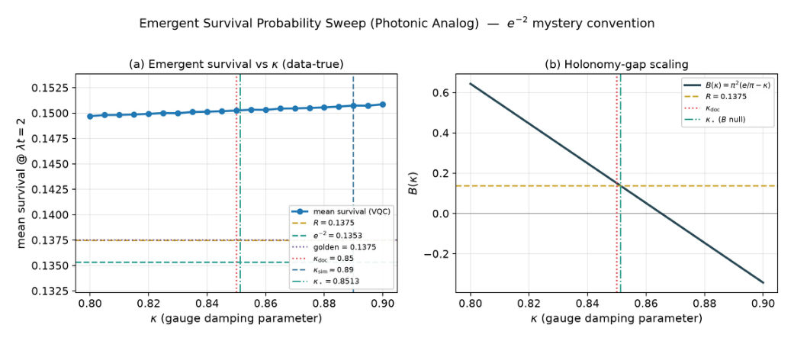
<figcaption class="paper-figure-caption"><b>Fig 2.</b> FIG. 2. Data-true emergent survival sweep from frozen oam flux emergence probes (report.json; ℓ= 3, λt = 2). (a) Mean survival after pump–relax versus gauge damping κ ∈[0.80, 0.90]. Horizontal lines: residual R ≈0.1375, mystery scale e−2 ≈ 0.1353, and golden-angle fraction. Vertical markers: κdoc = 0.85, κ⋆≈0.851, κsim ≈0.89. Measured mean survival ≈0.150 (∼11% above e−2, ∼9% above R). (b) Holonomy gap B(κ) = π2(e/π −κ) crosses zero at κ⋆and meets R near κdoc.</figcaption>
</figure>
<figure class="paper-figure-card">
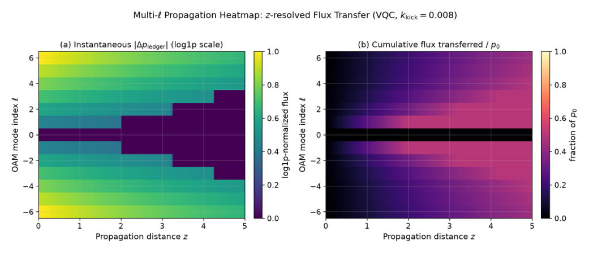
<figcaption class="paper-figure-caption"><b>Fig 3.</b> FIG. 3. Data-true multi-ℓz-resolved flux transfer from live VQC coupling (oam flux; kkick = 0.008 so the photon reservoir drains over many z steps rather than in a single kick). (a) Instantaneous ledger deposit |∆pledger| (log1p-normalized): transfer scales with |ℓ| (dark band at ℓ= 0 where OAM momentum vanishes) and extinguishes earlier for low-|ℓ| modes as p0 is exhausted. (b) Cumulative fraction of initial OAM momentum p0 transferred to the lattice; mid-|ℓ| channels approach ∼50% transfer by z = 5 in this kick window.</figcaption>
</figure>
<figure class="paper-figure-card">
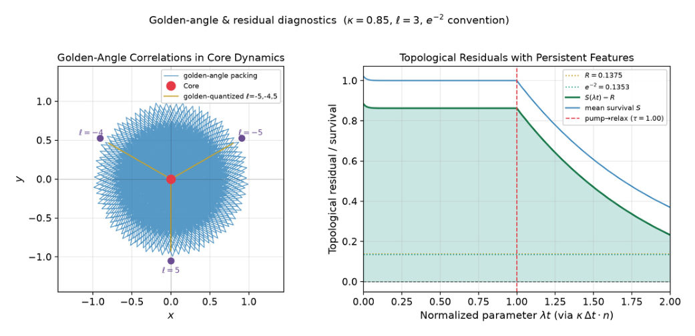
<figcaption class="paper-figure-caption"><b>Fig 4.</b> FIG. 4. Data-true golden-angle and residual diagnostics (κ = 0.85, ℓ= 3). Left: Vogel golden-angle packing in the transverse plane with the dynamical core at the origin; spokes mark golden-quantized OAM modes ℓ∈{−5, −4, 5} selected by the emergence probe (phase increments closest to multiples of ≈137.5◦). Right: instrumented pump–relax trajectory versus normalized λt. Mean survival S (blue) and residual feature S −R (green) plateau through the pump half-interval, then decay in pure PDE relaxation toward the {R, e−2} band (horizontal references). The red dashed line marks the pump→relax switch at τ = 1.</figcaption>
</figure>
</div>

<p><strong>Summary.</strong> This paper develops a computational bridge by simulating the behavior of twisted photons coupled into a gauged Hopf lattice. The study finds that these photonic systems exhibit emergent topological features, such as persistent core structures and specific quantized correlations, mirroring non-diffractive textures observed in relativistic fermion beams. This suggests photonics is an accessible analog platform for exploring universal concepts in topological matter waves.</p>
<p><strong>Why it may be interesting.</strong> This work is highly relevant as it uses quantum optics (OAM/photonic lattices) to model complex many-body physics concepts (topological protection in fermions), offering a concrete platform for testing universal physical principles.</p>
<details>
<summary>Detailed structure</summary>
<p><strong>Main problem.</strong> The primary goal is to establish a computational bridge by finding analogous topological phenomena between relativistic twisted fermion beams and photonic systems.</p>
<p><strong>Main result.</strong> The simulations show that coupling OAM flux into a gauged Hopf lattice results in emergent core features, persistent survival rates near specific constants ($e^{-2}$), and golden-angle correlations mirroring fermionic findings.</p>
<p><strong>Method.</strong> Numerical simulations are employed to model the evolution of Laguerre-Gaussian (LG) twisted photon packets coupled to a gauged Hopf lattice using relaxation PDEs.</p>
<p><strong>Model / system.</strong> The system involves two parts: 1) A reference fermionic model exhibiting non-diffractive topological spin textures, and 2) The photonic analog, which uses LG OAM packets propagating through a lattice governed by a PDE incorporating gauge damping torque.</p>
<p><strong>Key observables.</strong> Mean survival of twist ($\approx 0.150$), Topological Residual ($R \approx 0.1375$), Golden-Angle Correlations in the OAM ladder, and z-resolved flux transfer.</p>
<p><strong>Important parameters / regimes.</strong> Critical normalization $\lambda_t = 2$, Gauge damping parameter $\kappa$, and the characteristic constants $e^{-2} \approx 0.1353$ and $R$.</p>
<p><strong>Assumptions / limitations.</strong> The analogy is based on shared geometric/continuity constraints rather than a direct microscopic duality; the lattice PDE is calibrated, not derived from first principles.</p>
<p><strong>Figures summary.</strong> Figures illustrate the conceptual bridge between fermion cores and OAM flux transfer into the Hopf lattice. Figure 2 shows mean survival vs. gauge damping ($\kappa$), and Figure 4 displays golden-angle packing and the pump–relax trajectory near $\{R, e^{-2}\}$.</p>
<p><strong>Paper structure.</strong> The paper first establishes the fermionic context, then details the photonic model (LG packets on Hopf lattice), presents simulations showing emergent topological signatures (survival plateau, flux transfer), and concludes by formalizing the computational bridge between the two domains.</p>
</details>
<details>
<summary>Abstract</summary>
<p>Recent work has demonstrated non-diffractive topological spin textures (Skyrmion- and meron-like) that persist in the core of diffracting relativistic twisted fermion beams [1]. Here we present numerical simulations of an analogous photonic system: Laguerre-Gaussian (LG) twisted photon packets coupled to a gauged Hopf lattice with discrete flux flywheels. Our results reveal emergent behavior of the same qualitative class, including persistent core features under propagation, mean survival approx 0.150 at critical lambdat = 2 clustering tightly with the mystery scale e^{-2} approx 0.1353 and residual R approx 0.1375, golden-angle correlations in the OAM mode ladder, and topological residuals with long-lived structure. Multi-l simulations further exhibit z-resolved flux transfer and twist dynamics that play a role analogous to probability-current continuity in the fermionic setting. These findings suggest photonic platforms as accessible analogs for exploring topological textures in structured waves, and they formalize a concrete computational bridge between relativistic twisted matter waves and topological photonics.</p>
</details>
<p><sub><a href="#top">↑ back to top</a></sub></p>

<p><a id="paper-2607.17734"></a></p>
<h3 id="depth-determination-of-individual-shallow-nv-centers-via-spin-lock-nmr"><a href="http://arxiv.org/abs/2607.17734v1">Depth Determination of Individual Shallow NV-Centers via Spin-Lock NMR</a></h3>
<p><strong>Authors:</strong> Aaron Daniel, Beat Bürgler, Patrick Maletinsky, Patrick Potts<br>
<strong>Type:</strong> both · <strong>Category:</strong> other · <strong>PDF:</strong> <a href="https://arxiv.org/pdf/2607.17734v1">https://arxiv.org/pdf/2607.17734v1</a><br>
<strong>Analysis basis:</strong> full PDF text, analyzed in chunks
<strong>Topic relevance:</strong> 🔥 <code>QC/QI experiment</code> <strong>4/5</strong> · <code>methods for driven-dissipative</code> <strong>3/5</strong> · <code>spintronics-quantum-optics interface</code> <strong>3/5</strong> · <code>quantum measurements</code> <strong>2/5</strong> · <code>Keldysh / 2PI / non-Gaussian methods</code> <strong>1/5</strong> · <code>correlated / nonlocal dissipation</code> <strong>1/5</strong> · <code>driven-dissipative phase transition</code> <strong>1/5</strong></p>
<div class="figure-strip-hint">↔ Scroll figures horizontally</div>
<div class="paper-figures-scroll">
<figure class="paper-figure-card">
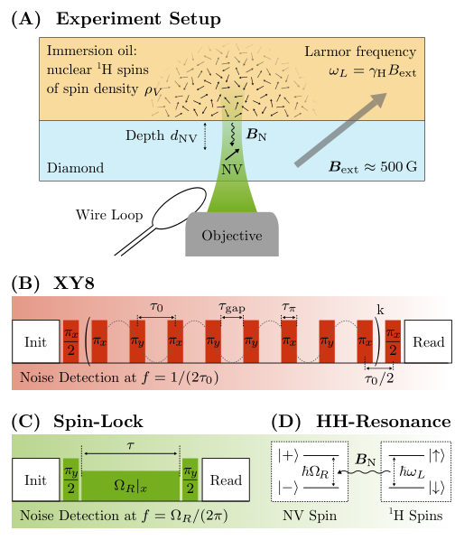
<figcaption class="paper-figure-caption"><b>Fig 1.</b> FIG. 1. Experimental arrangement for depth deter- mination of single NV centers. (A) The diamond surface is coated with immersion oil which contains 1H nuclear spins at a density ρV . In an external magnetic field Bext these nu- clear spins produce magnetic fluctuations BN that peak at the Larmor frequency ωL. By applying a suitable NMR con- trol sequence with a gold wire loop, these fluctuations can be detected by a shallow NV spin. Since the 1H spin noise ampli- tude depends on the NV depth dNV, the latter can be deter- mined by fitting the NMR signal with a quantitative theoreti- cal model. (B) The established sequence for such 1H NMR is XY8, a dynamical decoupling sequence comprised of...</figcaption>
</figure>
<figure class="paper-figure-card">
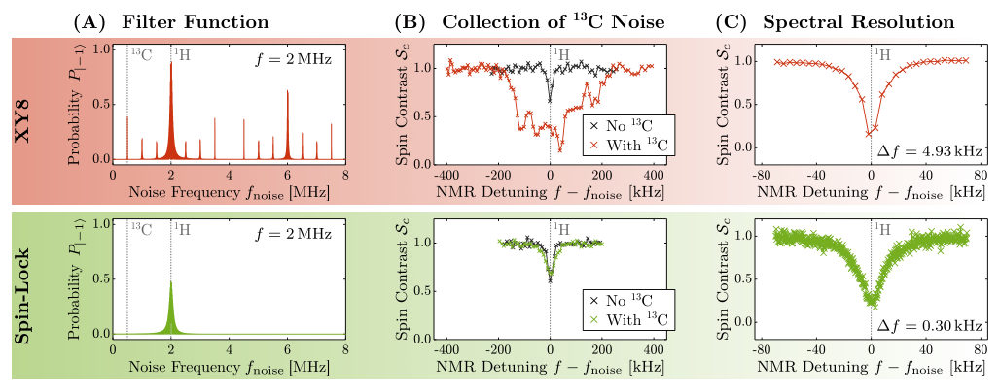
<figcaption class="paper-figure-caption"><b>Fig 2.</b> FIG. 2. Comparison of XY8 and Spin-Lock for 1H NMR. (A) Numerically computed filter functions of these two sequences, describing the probability P|−1⟩of the NV spin to be in state |−1⟩at the end of the sequence given that it was initially prepared in |0⟩, and plotted as a function of the applied noise frequency fnoise = ωL/(2π). Each sequence is constructed such that its detection frequency f is 2 MHz (= resonant with 1H spins at Bext ≈500 G). Our simulation shows that XY8, simulated for realistic pulses with τπ/τ0 = 20 %, collects not only the 1H noise at 2 MHz but also noise at various harmonics of f. In particular, there is a subharmonic on resonance with 13C noise (0.5 MHz). Spin-Lock,...</figcaption>
</figure>
<figure class="paper-figure-card">
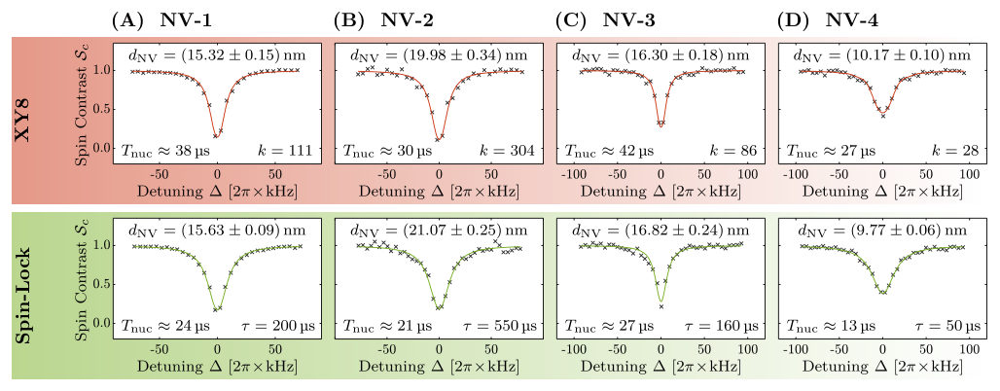
<figcaption class="paper-figure-caption"><b>Fig 3.</b> FIG. 3. Comparison of XY8 and Spin-Lock depth determination on immersion oil 1H spins. We measure the 1H NMR signal of immersion oil on the diamond surface with both sequences on four different NVs. These NVs, labeled NV-1 to NV-4, are located in an isotopically purified diamond crystal and were created by nitrogen ion implantation at an incidence angle of 7◦and an energy of 6 keV, resulting in a nominal implantation depth estimated by SRIM to be 9 nm. For each NV, the Spin-Lock duration τ is chosen to maximize the NMR SNR, and each XY8 measurement is performed with an XY8 repetition number k such that the total XY8 sequence duration 8kτ0 is equal to τ. To extract the NV depth dNV, we fit...</figcaption>
</figure>
<figure class="paper-figure-card">
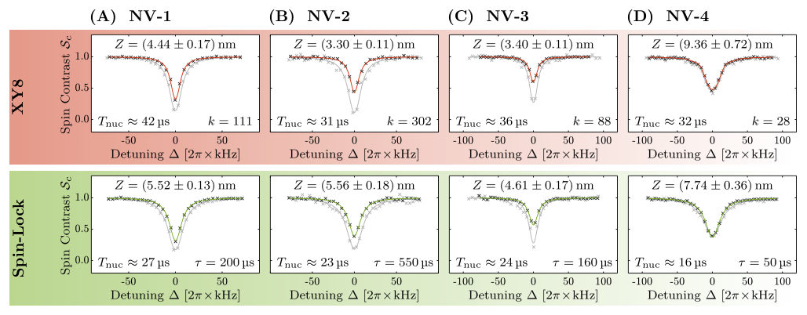
<figcaption class="paper-figure-caption"><b>Fig 4.</b> FIG. 4. Analysis of an adsorbate surface layer containing 1H spins. NMR data taken on the same NVs as in Fig. 3, acquired before the immersion oil was applied, i.e. the measurements were performed with a clean (oxygen-terminated) diamond surface. The resulting data taken by XY8 and Spin-Lock sequences are shown in green and red respectively, and the immersion oil data from Fig. 3 are shown in grey for comparison. Clearly, even in the absence of oil, all four NVs still show an 1H NMR signature, which is commonly assigned to a ∼1 nm thick, 1H-containing adsorbate layer on the diamond surface, as previously reported in [15, 40–46]. Similar to the approach taken in Refs. [15] and [40], we fit...</figcaption>
</figure>
<figure class="paper-figure-card">
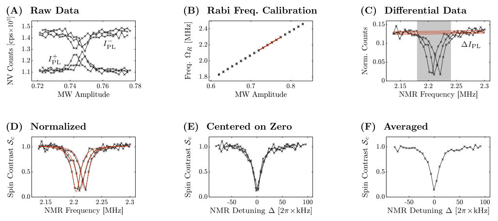
<figcaption class="paper-figure-caption"><b>Fig 5.</b> FIG. 5. NMR data treatment. (A) The raw data acquired in the lab is a number of NMR spectra, given in units of NV counts and taken as a function of MW amplitude. Here we show three such spectra as an example. Each of them consists of two separate lines I± PL, one for a final +π/2-pulse and one for a final −π/2-pulse. Each spectrum is the result of exactly one hour of measurement time, and between their acquisition, we recalibrate the NV spin transition frequency and all required microwave pulses (π and π/2) in order to eliminate the effect of slow drifts due to temperature fluctuations. (B) For each NMR spectrum, we also record a calibration of MW amplitude to Rabi frequency by measuring a...</figcaption>
</figure>
</div>

<p><strong>Summary.</strong> This paper presents Spin-Lock Nuclear Magnetic Resonance (NMR) as an advanced, robust method for determining the depth of individual NV centers in diamond. By tuning the microwave field to the ${}^1	ext{H}$ Larmor frequency, it avoids spectral artifacts present in older techniques like XY8 while achieving higher resolution. This establishes a reliable tool for quantitative quantum sensing measurements.</p>
<p><strong>Why it may be interesting.</strong> This work is highly relevant as it develops a sophisticated open quantum system measurement technique (Spin-Lock NMR) to characterize the local environment of a solid-state qubit (NV center), directly impacting the fidelity and utility of quantum sensors.</p>
<details>
<summary>Detailed structure</summary>
<p><strong>Main problem.</strong> The primary goal is to accurately determine the depth of individual shallow Nitrogen-Vacancy (NV) centers within diamond, a crucial parameter for quantitative quantum sensing applications.</p>
<p><strong>Main result.</strong> The authors introduce Spin-Lock NMR as a robust alternative method that achieves excellent agreement with established protocols while overcoming spectral limitations and harmonic ambiguities inherent in older techniques like XY8.</p>
<p><strong>Method.</strong> They derive a quantitative fit function from a Markovian master equation describing the NV interaction with the ${}^1	ext{H}$ nuclear spin bath, measured via Spin-Lock NMR spectroscopy.</p>
<p><strong>Model / system.</strong> The system involves shallow NV centers in diamond interacting with surface ${}^1	ext{H}$ spins. The theoretical framework uses a Quantum Master Equation (QME) solved in the dressed-state basis derived from the Spin-Lock Hamiltonian, which filters noise at the target Larmor frequency.</p>
<p><strong>Key observables.</strong> The measured ${}^1	ext{H}$ NMR spectrum's spin contrast ($S_c$) and its dependence on the NV depth ($d_{	ext{NV}}$).</p>
<p><strong>Important parameters / regimes.</strong> Spin-Lock Rabi frequency ($\Omega_R$), ${}^1	ext{H}$ Larmor frequency ($\omega_L$), and the spectral resolution ($\Delta f$).</p>
<p><strong>Assumptions / limitations.</strong> The analysis assumes a Markovian evolution for the nuclear bath and utilizes approximations within the dressed-state basis to simplify the QME.</p>
<p><strong>Figures summary.</strong> Figure 1 illustrates the comparison between the XY8 sequence and the proposed Spin-Lock alternative. Figure 2(B) likely compares depth measurements using both methods on diamonds with varying ${}^{13}	ext{C}$ content.</p>
<p><strong>Paper structure.</strong> The paper first identifies the limitations of existing NMR techniques (XY8), then introduces the theoretical basis for Spin-Lock NMR via a master equation, demonstrates its superior performance in noise immunity and resolution, validates it against established methods, and finally applies it to study signals on clean diamond surfaces.</p>
</details>
<details>
<summary>Abstract</summary>
<p>Quantitative quantum sensing with shallow electron spins, such as those hosted by nitrogen-vacancy (NV) centers in diamond, requires accurate knowledge of the spin's depth below the host material's surface. A widely used approach infers this depth from the 1H nuclear magnetic resonance (NMR) signal of immersion oil on the diamond surface that can be detected using dynamical decoupling sequences such as XY8. However, finite-width pulses make XY8 sensitive to subharmonic responses, including unwanted contributions from nearby 13C spins, and its instrument-limited spectral resolution provides only sparse sampling of the narrow 1H NMR lineshape. Here, we introduce Spin-Lock NMR as an alternative approach to single-NV depth determination. By tuning the Spin-Lock Rabi frequency to the 1H Larmor frequency, the NV probes the 1H NMR signal through the Hartmann-Hahn resonance without the harmonic ambiguities of pulsed decoupling sequences and with substantially higher instrument-limited spectral resolution. We derive a quantitative Spin-Lock NMR fit function from a Markovian master equation that directly relates the measured spectrum to the NV depth. Our approach yields NV depth estimates in excellent agreement with the established XY8-based protocol across multiple NV centers and establishes Spin-Lock NMR as a robust alternative for quantitative single-NV depth determination. To demonstrate its applicability, we employ our method to investigate the 1H nuclear spin signal that is regularly reported to be present on diamond, even in the absence of immersion oil.</p>
</details>
<p><sub><a href="#top">↑ back to top</a></sub></p>

<p><a id="paper-2607.17202"></a></p>
<h3 id="multi-level-random-telegraph-noise-mitigation-using-a-single-spectator-qubit"><a href="http://arxiv.org/abs/2607.17202v1">Multi-level Random-Telegraph Noise Mitigation using a Single Spectator Qubit</a></h3>
<p><strong>Authors:</strong> Yanan Liu, Hongting Song, Areeya Chantasri, Howard M. Wiseman<br>
<strong>Type:</strong> theory · <strong>Category:</strong> quantum information and computing · <strong>PDF:</strong> <a href="https://arxiv.org/pdf/2607.17202v1">https://arxiv.org/pdf/2607.17202v1</a><br>
<strong>Analysis basis:</strong> full PDF text, analyzed in chunks
<strong>Topic relevance:</strong> 🔥 <code>quantum measurements</code> <strong>4/5</strong> · <code>measurement-induced transitions</code> <strong>3/5</strong> · <code>methods for driven-dissipative</code> <strong>3/5</strong> · <code>non-equilibrium dynamics</code> <strong>2/5</strong> · <code>Keldysh / 2PI / non-Gaussian methods</code> <strong>1/5</strong> · <code>correlated / nonlocal dissipation</code> <strong>1/5</strong> · <code>driven-dissipative phase transition</code> <strong>1/5</strong></p>
<div class="figure-strip-hint">↔ Scroll figures horizontally</div>
<div class="paper-figures-scroll">
<figure class="paper-figure-card">

<figcaption class="paper-figure-caption"><b>Fig 1.</b> FIG. 1. An illustration of the measurement angle and time that are used in the Heuristic Adaptive Algorithm. The or- ange and blue arrows describe the state vectors of the two plausible SQ’s phases: ∣Φ⟩s = ∣Kµτ⟩s and ∣Φ⟩s = ∣Kντ⟩s, cor- responding to the noise levels µ and ν, respectively. The al- gorithm chooses τn+1 based on the time when the two phases are at an angle π apart as in Eq. (44). The black arrow describes the measurement angle θn+1, which is now shown to be at a random angle in the plot, but it should be equal to max{Kµτn+1, Kντn+1}, i.e., either aligned with ∣Kµτ⟩s or ∣Kντ⟩s, following Eq. (45).</figcaption>
</figure>
<figure class="paper-figure-card">

<figcaption class="paper-figure-caption"><b>Fig 2.</b> FIG. 2. The decoherence as a function of time under different measurement strategies. The black dots correspond to the no-control case. The gray dots represent a fixed measurement angle and time: θ = 1 and τ = π/Mean(K). The magenta dots correspond to the fixed measurement angle and time: θ = π/2 and τ = π/Mean(K). The red, blue, and green curves show the results of the Heuristic Adaptive Algorithm with three initial measurement settings, i.e., case 1, case 2 and case 3. The orange solid line is the upper bound from (52). The inset displays a zoomed-in view.</figcaption>
</figure>
</div>

<p><strong>Summary.</strong> This paper introduces a novel method to protect quantum coherence in a data qubit from general multi-level environmental noise using measurements on a spectator qubit. The core contribution is a memory-efficient, adaptive protocol that dynamically optimizes measurement timing and angles based on the estimated noise state. This demonstrates robust decoherence suppression even when the noise environment is significantly more complex than previously modeled.</p>
<p><strong>Why it may be interesting.</strong> This work directly addresses open quantum systems by providing an advanced, adaptive control strategy to combat realistic, complex environmental noise sources beyond simple two-level approximations.</p>
<details>
<summary>Detailed structure</summary>
<p><strong>Main problem.</strong> The primary challenge is preserving quantum coherence of a data qubit (DQ) when subjected to complex, multi-level environmental noise.</p>
<p><strong>Main result.</strong> A proposed heuristic adaptive protocol successfully suppresses decoherence under general multi-level noise, achieving performance comparable to simpler two-state noise models.</p>
<p><strong>Method.</strong> The authors developed a mitigation scheme that infers the unknown noise state from sequential measurements performed on an auxiliary spectator qubit (SQ) and uses this information for phase correction.</p>
<p><strong>Model / system.</strong> The system consists of a DQ and an SQ interacting with an environment causing multi-level random telegraph noise, modeled by $L$ discrete noise levels. The dynamics are governed by time-dependent frequency shifts ($ ilde{\kappa}(t),    ilde{K}(t)$) derived from the noise state.</p>
<p><strong>Key observables.</strong> Coherence ($C_c$), decoherence rate ($\Gamma$), and the probability vector $\vec{A}_n$ tracking the estimated noise state.</p>
<p><strong>Important parameters / regimes.</strong> The number of noise levels $L$, the transition rates $\gamma_{ij}$, and the measurement parameters (time $    au_n$ and angle $   heta_n$).</p>
<p><strong>Assumptions / limitations.</strong> It is assumed that the SQ sensitivities ($K_j$) are non-degenerate relative to the DQ sensitivities ($\kappa_j$), otherwise, the noise distinction fails.</p>
<p><strong>Figures summary.</strong> Figure 2 numerically compares decoherence vs. time for 'no-control,' fixed measurements, and the Heuristic Adaptive Algorithm, showing the adaptive method significantly outperforms others and stays below the analytical upper bound.</p>
<p><strong>Paper structure.</strong> The paper progresses from deriving coherence dynamics under multi-level noise to developing a measurement-based mitigation scheme using map-based formalism. It then introduces and details a memory-efficient heuristic adaptive protocol for selecting optimal measurement settings ($   au_{n+1},   heta_{n+1}$) based on the current noise estimate.</p>
</details>
<details>
<summary>Abstract</summary>
<p>Preserving quantum coherence in the presence of environmental noise is one of the principal challenges for quantum technologies. Noise mitigation using spectator qubits (SQs) has recently emerged as a promising approach, enabling indirect probing of the noise without disturbing the data qubit (DQ). However, existing analyses that probe ultimate performance have been restricted to two-state random telegraph process noise, which does not capture more complex noise processes that may arise in the environment. Therefore, we here develop a SQ-based noise mitigation for DQs subject to general multi-level fluctuator noise. We first derive the coherence dynamics of the DQ under such noise, then develop a mitigation scheme in which information about the noise is inferred from sequential SQ measurements and used for phase correction. A memory-efficient heuristic adaptive protocol is proposed to dynamically select the SQ measurement time and angle based on the current noise estimate. Numerical simulations demonstrate that the proposed strategy significantly suppresses decoherence under multi-level noise, achieving performance comparable to that in the two-level case despite the increased complexity of the noise process.</p>
</details>
<p><sub><a href="#top">↑ back to top</a></sub></p>

<p><a id="paper-2607.16639"></a></p>
<h3 id="on-the-information-required-for-feedback-control"><a href="http://arxiv.org/abs/2607.16639v1">On the Information Required for Feedback Control</a></h3>
<p><strong>Authors:</strong> Matthew P. Leighton, Jose M. Betancourt, Thierry Emonet, Benjamin B. Machta, Michael C. Abbott<br>
<strong>Type:</strong> theory · <strong>Category:</strong> statistical mechanics · <strong>PDF:</strong> <a href="https://arxiv.org/pdf/2607.16639v1">https://arxiv.org/pdf/2607.16639v1</a><br>
<strong>Analysis basis:</strong> full PDF text, analyzed in chunks
<strong>Topic relevance:</strong> 🔥 <code>quantum measurements</code> <strong>4/5</strong> · <code>non-equilibrium dynamics</code> <strong>3/5</strong> · <code>non-equilibrium universality</code> <strong>2/5</strong> · <code>Keldysh / 2PI / non-Gaussian methods</code> <strong>1/5</strong> · <code>correlated / nonlocal dissipation</code> <strong>1/5</strong> · <code>driven-dissipative phase transition</code> <strong>1/5</strong> · <code>entanglement &amp; information structure</code> <strong>1/5</strong> · <code>measurement-induced transitions</code> <strong>1/5</strong> · <code>methods for driven-dissipative</code> <strong>1/5</strong></p>
<div class="figure-strip-hint">↔ Scroll figures horizontally</div>
<div class="paper-figures-scroll">
<figure class="paper-figure-card">

<figcaption class="paper-figure-caption"><b>Fig 1.</b> FIG. 1. Schematic illustrating the setup and our bound. A diffusive Brownian particle in one dimension (passive dynam- ics dxp t = √</figcaption>
</figure>
<figure class="paper-figure-card">

<figcaption class="paper-figure-caption"><b>Fig 2.</b> FIG. 2. Controlling a noisy bit. Left: schematic, with passive bit flips at rate γ = 1. The performance measure is P[ρ] = ρ0, the steady-state probability of being in state 0. Right: infor- mation rate vs control error rate λ0, always achieving a fixed performance ρ0 = 0.7. Given ρ0 and γ, λ0 uniquely fixes λ1. Black dotted line: the bound Eq. (12). Blue line: information rate ˙Tx→dxc. Green dot-dashed line: instantaneous informa- tion rate ˙I+ c ≥˙Tx→dxc, Eq. (13). Purple dashed line: optimal rate λ0 which saturates the bound by time-reversing the pas- sive dynamics.</figcaption>
</figure>
<figure class="paper-figure-card">

<figcaption class="paper-figure-caption"><b>Fig 3.</b> FIG. 3. Controlling a Brownian particle in a Mexican–hat potential, with the target being either (a) the unstable fixed point x∗ 1 = (0, 0), or (b) the stable fixed point x∗ 2 = (1, 0). With no control, the performance P[ρ] = 1/⟨|x −x∗|2⟩re- mains finite (green dotted lines). The Data Rate Theorem (DRT), Eq. (23), provides a lower bound on the informa- tion rate required for stabilization (vertical dashed line) only in the unstable case (a). Blue dot-dashed curves: the DRT generalized to account for diffusion, Eq. (24). Black dotted curves: Pareto frontier from Eq. (12), with the forbidden re- gion shaded in grey. Purple points: time-reversal protocol, Eq. (C16), with information rate...</figcaption>
</figure>
<figure class="paper-figure-card">

<figcaption class="paper-figure-caption"><b>Fig 4.</b> FIG. 4. Up-gradient velocity vs information rate for navi- gation in 2D (inset: schematic). Black dotted line: Pareto frontier, Eq. (28). Purple: time-reversal protocol. Blue Squares: optimized Run-and-Tumble navigation. Green Dia- monds: optimized Run-Reverse navigation, with information rate computed using TE-PWS [38].</figcaption>
</figure>
<figure class="paper-figure-card">

<figcaption class="paper-figure-caption"><b>Fig 5.</b> FIG. 5. Information rate vs heat extracted from the bath for an information engine. Blue: second law of information thermodynamics. Black dotted line: Pareto frontier (30). Red points: simulations of the experimentally implemented control protocol from Ref. [43] plotted parametrically, vary- ing the measurement noise σm, with information rate evalu- ated using TE-PWS [38]. Purple line: Time-reversal proto- col. Black dot-dashed line: second law of bipartite thermo- dynamics. Vertical dashed lines: maximum heat flow with no average work (black) and with no work for each controller action (grey). Parameters are ts/τr = 1/41, δg = 0.8, and τr = 0.8 × 10−3s, from the experimental setup in Ref....</figcaption>
</figure>
</div>

<p><strong>Summary.</strong> This paper develops a general framework to quantify the minimum amount of information needed to control a stochastic physical system toward a target steady state. It derives a fundamental lower bound relating this required information rate to the passive entropy production rate of the uncontrolled dynamics. This has implications for understanding optimal feedback control in fields ranging from biology to engineering.</p>
<p><strong>Why it may be interesting.</strong> The work provides a rigorous information-theoretic lens—a generalized second law—for understanding control in complex, noisy systems, which has parallels in open quantum system dynamics where dissipation is key.</p>
<details>
<summary>Detailed structure</summary>
<p><strong>Main problem.</strong> The study focuses on deriving fundamental lower bounds for the information rate required by a controller to guide a stochastic system toward a desired steady state.</p>
<p><strong>Main result.</strong> A key theoretical result establishes that the minimum required information rate is bounded below by the passive entropy rate of the uncontrolled dynamics ($\dot{S}_p \le \dot{T}_{x 	o 	ext{d}x_c}$).</p>
<p><strong>Method.</strong> The analysis employs information theory, relating changes in system entropy to mutual and conditional entropies derived from stochastic differential equations (SDEs).</p>
<p><strong>Model / system.</strong> The models involve general stochastic systems with passive dynamics (e.g., Brownian motion, bit flipping) coupled to an active control input. The framework is general but applied to localization and navigation problems.</p>
<p><strong>Key observables.</strong> Information Rate ($\dot{T}_{x 	o 	ext{d}x_c}$), Passive Entropy Rate ($\dot{S}_p$), Performance functional ($P[
ho]$).</p>
<p><strong>Important parameters / regimes.</strong> The analysis is sensitive to the nature of passive dynamics (e.g., state-independent vs. general) and operates in limits like low information content ($\epsilon \ll 1$).</p>
<p><strong>Assumptions / limitations.</strong> Assumptions include stationarity for steady-state analysis, and approximations using instantaneous rates or Gaussian distributions when deriving explicit protocols.</p>
<p><strong>Figures summary.</strong> Figures illustrate the relationship between performance, entropy, and required information rate for various control scenarios (e.g., Brownian particle localization).</p>
<p><strong>Paper structure.</strong> The paper builds from defining the stochastic system dynamics to establishing the core information-theoretic bound ($\dot{S}_p \le \dot{T}_{x 	o 	ext{d}x_c}$), deriving optimal time-reversal protocols for specific cases, and applying this framework to diverse physical examples like particle localization and information engines.</p>
</details>
<details>
<summary>Abstract</summary>
<p>Biological systems across scales, along with many engineering problems, must control noisy systems with limited information. Here we study information-limited feedback control of stochastic systems to achieve target steady states, and derive a lower bound on the information rate from controlled system to controller. This framework allows us to obtain performance-information Pareto frontiers for wide-ranging control problems with limited information. For systems with state-independent passive dynamics, the bound is saturated by an explicit optimal control protocol which probabilistically time-reverses the passive dynamics. We showcase these results through applications to nonlinear particle localization, microbial navigation, and experimentally realized information engines.</p>
</details>
<p><sub><a href="#top">↑ back to top</a></sub></p>

<p><a id="paper-2607.16516"></a></p>
<h3 id="split-quaternionic-structure-and-canonical-quantization-of-the-bateman-dual-oscillator"><a href="http://arxiv.org/abs/2607.16516v1">Split-quaternionic structure and canonical quantization of the Bateman dual oscillator</a></h3>
<p><strong>Authors:</strong> Mathieu Beau<br>
<strong>Type:</strong> theory · <strong>Category:</strong> other · <strong>PDF:</strong> <a href="https://arxiv.org/pdf/2607.16516v1">https://arxiv.org/pdf/2607.16516v1</a><br>
<strong>Analysis basis:</strong> full PDF text, analyzed in chunks
<strong>Topic relevance:</strong> 🔥 <code>methods for driven-dissipative</code> <strong>4/5</strong> · <code>Keldysh / 2PI / non-Gaussian methods</code> <strong>3/5</strong> · <code>correlated / nonlocal dissipation</code> <strong>2/5</strong> · <code>driven-dissipative phase transition</code> <strong>2/5</strong> · <code>non-equilibrium dynamics</code> <strong>2/5</strong> · <code>Kondo &amp; dissipative impurity</code> <strong>1/5</strong> · <code>non-equilibrium universality</code> <strong>1/5</strong></p>
<div class="figure-strip-hint">↔ Scroll figures horizontally</div>
<div class="paper-figures-scroll">
<figure class="paper-figure-card">

<figcaption class="paper-figure-caption"><b>Fig 1.</b> FIG. 1. Reduced position variance for the specified factorized doubled Gaussian and for the high-temperature Markovian Caldeira–Leggett model in the underdamped harmonic case. Parameters are m = ℏ= 1, ω0 = 1, γ = 0.3, ℓ= 1, and kBT = 2. The doubled result is a coherent, auxiliary-state-dependent reduction; the Caldeira–Leggett curve contains bath-induced diffusion.</figcaption>
</figure>
<figure class="paper-figure-card">

<figcaption class="paper-figure-caption"><b>Fig 2.</b> FIG. 2. Same comparison in the free damped limit ω0 = 0, with the remaining parameters as in Fig. 1. For the cho- sen doubled state the reduced variance saturates, whereas the Caldeira–Leggett variance grows because of momentum diffu- sion.</figcaption>
</figure>
</div>

<p><strong>Summary.</strong> This paper quantizes the Bateman dual oscillator using an advanced split-quaternionic algebraic structure. It successfully derives the system's propagator and shows that this mathematical framework describes a reversible, zero-noise embedding of damping. Crucially, it distinguishes its approach from standard open quantum system theories like Caldeira–Leggett by analyzing the resulting reduced density matrix.</p>
<p><strong>Why it may be interesting.</strong> It provides a novel mathematical tool (split-quaternions) to handle non-Hermitian or doubled dynamics in quantum mechanics, offering insights into how damping can be treated symmetrically without invoking explicit environmental coupling.</p>
<details>
<summary>Detailed structure</summary>
<p><strong>Main problem.</strong> The paper develops a unified algebraic framework using split-quaternionic structures to canonically quantize the Bateman dual oscillator, which models damped harmonic motion.</p>
<p><strong>Main result.</strong> The formulation successfully provides an exact quadratic propagator and Gaussian evolution for the doubled system, clarifying that it represents a coherent zero-noise embedding rather than a true microscopic reservoir theory.</p>
<p><strong>Method.</strong> The authors employ split-quaternionic algebra to construct operator-valued generalizations of the dynamics on the doubled phase space, leading to canonical quantization rules.</p>
<p><strong>Model / system.</strong> The system is the Bateman dual oscillator, which couples a damped harmonic oscillator with an independent anti-damped adjoint coordinate. The analysis extends this classical model into a quantum domain using hypercomplex algebra.</p>
<p><strong>Key observables.</strong> Robertson–Schrödinger uncertainty relation; reduced position density $
ho_{SQ}(x, t)$; the propagator $K(q_f, q_i; t)$.</p>
<p><strong>Important parameters / regimes.</strong> Damping coefficient ($\gamma$), natural frequency ($\omega_0$), and Planck's constant ($\hbar$).</p>
<p><strong>Assumptions / limitations.</strong> The comparison with Caldeira–Leggett dynamics assumes the doubled model is a coherent embedding, not a standard bath coupling; the recovery of single-oscillator relations requires selecting only one normal mode.</p>
<p><strong>Figures summary.</strong> Figures compare the reduced position variance ($   ext{xx}(t)$) for both the split-quaternionic and Caldeira–Leggett models, showing saturation versus diffusive growth.</p>
<p><strong>Paper structure.</strong> The paper systematically develops the classical dynamics via Lagrangian reduction to known damped forms, then introduces the split-quaternionic quantization framework. It calculates the quantum propagator and finally contrasts the resulting reduced density matrix with standard open system descriptions like Caldeira–Leggett theory.</p>
</details>
<details>
<summary>Abstract</summary>
<p>Bateman's dual oscillator embeds a damped harmonic oscillator and an independent anti-damped adjoint coordinate in a conservative doubled system. We develop a split-quaternionic formulation that remains consistent from the classical equations through ordinary complex canonical quantization. The doubled dynamics is written as a two-sided hypercomplex evolution whose conserved indefinite quadratic form is the split norm, while the sign of the generator square unifies the underdamped, overdamped, and critical regimes. The Bateman Lagrangian is recovered as a real scalar action on the split-complex configuration subalgebra. After quantization, operator-valued split quaternions belong to the complexified algebra $\mathbb C\otimes_{\mathbb R}\mathbb H_s\simeq M_2(\mathbb C)$. Noncommuting mechanical components require a symmetrized quantum split norm, which exactly reproduces the symmetrically ordered canonical Hamiltonian. Null idempotents resolve the crossed canonical structure of the doubled phase space. In particular, damping yields $[m\dot{\widehat y},m\dot{\widehat x}]=\mathrm{i}\hbar mγ$ and a Robertson--Schrödinger uncertainty relation. The limit $γ\to0$ retains the doubled positive/negative geometry; the ordinary single-oscillator Heisenberg relation is recovered only after selecting the positive normal mode, or by undoubling before quantization. The scalar split action gives the exact quadratic propagator and Gaussian evolution. A formal trace over the auxiliary coordinate is finally compared with high-temperature Caldeira--Leggett dynamics, clarifying that the doubled model is a coherent zero-noise embedding rather than a microscopic reservoir theory.</p>
</details>
<p><sub><a href="#top">↑ back to top</a></sub></p>

<p><a id="paper-2607.17346"></a></p>
<h3 id="the-information-content-of-krylov-observables-a-machine-learning-approach"><a href="http://arxiv.org/abs/2607.17346v1">The Information Content of Krylov Observables: A Machine Learning Approach</a></h3>
<p><strong>Authors:</strong> Ritam Basu<br>
<strong>Type:</strong> theory · <strong>Category:</strong> disordered systems and neural networks · <strong>PDF:</strong> <a href="https://arxiv.org/pdf/2607.17346v1">https://arxiv.org/pdf/2607.17346v1</a><br>
<strong>Analysis basis:</strong> full PDF text, analyzed in chunks
<strong>Topic relevance:</strong> 🔥 <code>entanglement &amp; information structure</code> <strong>4/5</strong> · <code>methods for driven-dissipative</code> <strong>3/5</strong> · <code>non-equilibrium dynamics</code> <strong>3/5</strong> · <code>non-equilibrium universality</code> <strong>2/5</strong> · <code>Keldysh / 2PI / non-Gaussian methods</code> <strong>1/5</strong> · <code>analog quantum simulation</code> <strong>1/5</strong> · <code>driven-dissipative phase transition</code> <strong>1/5</strong></p>
<div class="figure-strip-hint">↔ Scroll figures horizontally</div>
<div class="paper-figures-scroll">
<figure class="paper-figure-card">

<figcaption class="paper-figure-caption"><b>Fig 1.</b> Figure 1. Left: the residual MLP used for every task in this paper, with W = 16 (random-matrix scans) or W = 32 (CFT and interpolation). Right: One residual block. The identity skip lets each block learn a correction to its input, which stabilises training at small width/neurons.</figcaption>
</figure>
<figure class="paper-figure-card">

<figcaption class="paper-figure-caption"><b>Fig 2.</b> Figure 2. GUE dataset diagnostics (13,650 samples; D = 101–701, seven temperatures). (a) C/D per β at the largest D; (b) N/ √</figcaption>
</figure>
<figure class="paper-figure-card">

<figcaption class="paper-figure-caption"><b>Fig 3.</b> Figure 3. GUE temperature regression. Top: C(t) →β, R2 = 0.999. Bottom: N(t) →β, R2 = 0.998. Left panels: train/validation losses (no overfitting); right panels: predicted vs true β on held-out samples.</figcaption>
</figure>
<figure class="paper-figure-card">

<figcaption class="paper-figure-caption"><b>Fig 4.</b> Figure 4. GUE curve reconstructions on held-out samples (true solid, prediction dashed). Top: N →C, R2 vw = 0.994, relL2 = 0.035. Bottom: C →N, R2 vw = 0.973, relL2 = 0.024. The two metrics order the directions oppositely; per our protocol no surplus is claimed from this data.</figcaption>
</figure>
<figure class="paper-figure-card">

<figcaption class="paper-figure-caption"><b>Fig 5.</b> Figure 5. The lossiness result on GUE. Top: C →SFF, R2 vw = 0.185. Bottom: N →SFF, R2 vw = 0.188. In every held-out sample the prediction (dashed) reproduces the dip and the smooth envelope and none of the sample-specific ramp fluctuations.</figcaption>
</figure>
</div>

<p><strong>Summary.</strong> The authors use machine learning to analyze three Krylov observables derived from quantum time evolution in various chaotic and integrable systems. They find that while all observables retain some information (e.g., temperature), the normalized negativity ($\chi(t)$) uniquely captures an 'informational surplus' that grows precisely as the system enters a chaotic regime. This establishes $\chi(t)$ as a powerful, quantifiable signature of quantum chaos.</p>
<p><strong>Why it may be interesting.</strong> This work provides a sophisticated data-driven diagnostic tool for characterizing the degree of quantum chaos, moving beyond simple spectral statistics by quantifying <em>how</em> information is encoded across different moments of the wave function evolution.</p>
<details>
<summary>Detailed structure</summary>
<p><strong>Main problem.</strong> The study aims to quantitatively estimate the information content carried by three specific Krylov-space observables ($C(t)$, $N(t)$, $\chi(t)$) to probe underlying quantum chaotic dynamics.</p>
<p><strong>Main result.</strong> The normalized negativity ($\chi(t)$) is shown to carry a unique 'surplus' of information that switches on with chaos, suggesting it is a robust signature of the transition from integrable to chaotic regimes.</p>
<p><strong>Method.</strong> Machine learning techniques (residual networks and boosted trees) are employed to train models on time-evolved data generated across various quantum ensembles. The performance metrics quantify the mutual information content between observables and physical parameters.</p>
<p><strong>Model / system.</strong> The analysis concerns quantum dynamics governed by a Hamiltonian $H$, simulated via the Lanczos procedure, covering random matrix ensembles (GUE, GOE, Poisson), integrable CFT sectors, and interpolating Hamiltonians. The diagnostics are applied to time-evolved wavepackets on a tridiagonal chain.</p>
<p><strong>Key observables.</strong> Spread complexity $\mathcal{C}(t)$, discrete Wigner negativity $N(t)$, normalized negativity $\chi(t) = N(t)/|S(t)|$, and the Spectral Form Factor (SFF).</p>
<p><strong>Important parameters / regimes.</strong> The analysis spans different spectral ensembles (GUE, GOE, Poisson), varying coupling constants $(h, \alpha)$ in CFT, and the chaos interpolation parameter $\epsilon$.</p>
<p><strong>Assumptions / limitations.</strong> ML test-set scores provide operational lower bounds on mutual information; the decay of certain gaps ($  ext{gap}_N$) deep in chaos is attributed to dynamic-range artifacts rather than physical loss of information.</p>
<p><strong>Figures summary.</strong> Figures illustrate how the $\chi$-surplus grows and saturates with system dimension $D$ as a thermodynamic limit effect, while other diagnostics show collapse or saturation patterns across different ensembles.</p>
<p><strong>Paper structure.</strong> The paper establishes the problem by defining observables, uses ML to test their predictive power against known physical labels (like temperature), compares performance across various quantum regimes (integrable vs. chaotic), and culminates in identifying $\chi(t)$'s unique informational signature of chaos.</p>
</details>
<details>
<summary>Abstract</summary>
<p>We employ machine learning to quantify the information carried by three Krylov-space observables: the spread complexity $\mathcal{C}(t)$, the discrete Wigner negativity $N(t)$, and the normalized negativity $χ(t)=N(t)/|S(t)|$, with $S(t)$ the survival amplitude, recently proposed as a second-moment infall probe (arXiv:2607.04065). Small residual networks (16-32 neurons) and boosted trees are trained on half of $\sim 57{,}000$ labeled evolutions spanning the GUE, GOE and Poisson ensembles, the integrable $SL(2,\mathbb{R})$/CFT sector, and the chaos interpolation $H(\varepsilon)=H_{SL(2,\mathbb{R})}+\varepsilon R_0 W_{GUE}$. Either moment determines the thermofield temperature at $R^2\simeq 0.999$. Neither reconstructs the fine spectral form factor ($R^2\simeq 0.18$ in every ensemble); smoothing the target does not repair this, and windows wide enough to help erase the dip-ramp physics itself: the SFF strictly refines both moments. The coarse $e^S$ plateau is nevertheless recovered at $R^2=0.861$, mostly from the first 20% of $\mathcal{C}(t)$. A single curve identifies the symmetry class at up to 98% accuracy. In the integrable sector the observables are informationally equivalent, as exact negative-binomial slaving demands, while the negativity best resolves the $(h,α)$ degeneracy ($N\to h$: 0.999). Along the interpolation the asymmetry gap of $χ$ over $\mathcal{C}$ switches on with chaos, growing from +0.33 to +0.77 as the level statistics cross to GUE, while the raw-$N$ gap decays to zero. The second-moment informational surplus is therefore a signature of chaos, carried specifically by the normalized negativity, and we derive an analytical mechanism and a quantitative bound for it.</p>
</details>
<p><sub><a href="#top">↑ back to top</a></sub></p>

<p><a id="paper-2607.17907"></a></p>
<h3 id="a-unified-discrete-and-continuous-theory-of-core-halo-complexity-maximizers"><a href="http://arxiv.org/abs/2607.17907v1">A Unified Discrete and Continuous Theory of Core-Halo Complexity Maximizers</a></h3>
<p><strong>Authors:</strong> Akshat Sharma<br>
<strong>Type:</strong> theory · <strong>Category:</strong> statistical mechanics · <strong>PDF:</strong> <a href="https://arxiv.org/pdf/2607.17907v1">https://arxiv.org/pdf/2607.17907v1</a><br>
<strong>Analysis basis:</strong> full PDF text, analyzed in chunks
<strong>Topic relevance:</strong> 🔥 <code>entanglement &amp; information structure</code> <strong>4/5</strong> · <code>analog quantum simulation</code> <strong>2/5</strong> · <code>non-equilibrium dynamics</code> <strong>2/5</strong> · <code>non-equilibrium universality</code> <strong>2/5</strong> · <code>Keldysh / 2PI / non-Gaussian methods</code> <strong>1/5</strong> · <code>correlated / nonlocal dissipation</code> <strong>1/5</strong> · <code>driven-dissipative phase transition</code> <strong>1/5</strong> · <code>methods for driven-dissipative</code> <strong>1/5</strong></p>
<div class="figure-strip-hint">↔ Scroll figures horizontally</div>
<div class="paper-figures-scroll">
<figure class="paper-figure-card">

<figcaption class="paper-figure-caption"><b>Fig 1.</b> Figure 1: Schematic representation of the complexity-maximizing discrete distribution. One dominant component forms the core, while the remaining components constitute a uniform halo.</figcaption>
</figure>
<figure class="paper-figure-card">

<figcaption class="paper-figure-caption"><b>Fig 2.</b> Figure 2: Schematic representation of the complexity-maximizing continuous density. A local- ized high-density core is embedded within an extended low-density halo.</figcaption>
</figure>
</div>

<p><strong>Summary.</strong> This paper unifies the characterization of statistical complexity across both discrete and continuous probability spaces using a generalized variational framework involving Shannon and Rényi entropies. It proves that any state maximizing this complexity must exhibit a universal two-level 'core-halo' structure. This provides a complete analytical tool for understanding how complex organization emerges mathematically in diverse physical systems.</p>
<p><strong>Why it may be interesting.</strong> While not directly about quantum dynamics, the rigorous mathematical framework for characterizing emergent structure (core-halo) based on information theory is highly relevant for analyzing complexity in many-body quantum systems or open quantum systems far from equilibrium.</p>
<details>
<summary>Detailed structure</summary>
<p><strong>Main problem.</strong> To develop a unified mathematical framework for quantifying statistical complexity that measures deviation from both perfect order and complete disorder.</p>
<p><strong>Main result.</strong> The global maximum of the generalized statistical complexity is universally attained by distributions possessing exactly two probability levels (a core-halo structure), regardless of whether the underlying space is discrete or continuous.</p>
<p><strong>Method.</strong> The authors developed a general variational framework using Shannon and Rényi entropies, deriving common stationary equations applicable across both discrete and continuous probability spaces.</p>
<p><strong>Model / system.</strong> The theory applies to general probability distributions in both finite discrete systems (probability masses) and continuous probability spaces (densities). The complexity measure is generalized from standard entropy concepts.</p>
<p><strong>Key observables.</strong> Generalized statistical complexity ($C_q$), Shannon Entropy ($H_1$), Rényi Entropies ($H_q$, $H_{2q}$), and the core-halo structure.</p>
<p><strong>Important parameters / regimes.</strong> The multiplicity parameter ($m$) in discrete systems, and the continuous core measure ($M$); the optimization depends on these parameters.</p>
<p><strong>Assumptions / limitations.</strong> The framework assumes that complexity can be constructed from entropic measures and relies heavily on variational calculus techniques like the Envelope Theorem for simplification.</p>
<p><strong>Paper structure.</strong> The paper progresses by first establishing the need for a unified measure, developing the generalized variational functional ($\Phi$), deriving common stationary equations for discrete/continuous cases, and finally using differentiation (Envelope Theorem) to prove that optimization leads to the smallest possible core size.</p>
</details>
<details>
<summary>Abstract</summary>
<p>The maximization of statistical complexity has long been associated with the emergence of probability distributions lying between perfect order and complete disorder. While previous studies have shown that complexity-maximizing distributions exhibit a two-level structure in finite discrete systems, an analogous unified treatment for both discrete and continuous probability spaces has remained unavailable. In this work, we develop a general variational framework for a generalized statistical complexity constructed from Shannon and Renyi entropies. We derive a common stationary equation governing both discrete probability masses and continuous probability densities and prove that every stationary solution necessarily possesses exactly two probability levels, establishing a universal core-halo structure. We further demonstrate that the optimization problem reduces to a single multiplicity parameter and prove that the global complexity maximum is attained by the smallest admissible core, corresponding to a single dominant state in the discrete case and an infinitesimal core in the continuous limit. These results provide a complete analytical characterization of the complexity-maximizing distributions and reveal a common mathematical structure underlying complexity optimization in both discrete and continuous settings. The framework establishes a unified foundation for generalized statistical complexity with potential applications in statistical mechanics, information theory, and the analysis of complex systems.</p>
</details>
<p><sub><a href="#top">↑ back to top</a></sub></p>

<p><a id="paper-2607.17327"></a></p>
<h3 id="interpreting-quantum-learning-models-via-stochastic-processes"><a href="http://arxiv.org/abs/2607.17327v1">Interpreting Quantum Learning Models via Stochastic Processes</a></h3>
<p><strong>Authors:</strong> Johannes Fankhauser, Lukas J. Fiderer, Hans J. Briegel<br>
<strong>Type:</strong> theory · <strong>Category:</strong> quantum information and computing · <strong>PDF:</strong> <a href="https://arxiv.org/pdf/2607.17327v1">https://arxiv.org/pdf/2607.17327v1</a><br>
<strong>Analysis basis:</strong> full PDF text, analyzed in chunks
<strong>Topic relevance:</strong> 🔥 <code>quantum measurements</code> <strong>4/5</strong> · <code>measurement-induced transitions</code> <strong>3/5</strong> · <code>methods for driven-dissipative</code> <strong>3/5</strong> · <code>Keldysh / 2PI / non-Gaussian methods</code> <strong>1/5</strong> · <code>correlated / nonlocal dissipation</code> <strong>1/5</strong> · <code>driven-dissipative phase transition</code> <strong>1/5</strong> · <code>entanglement &amp; information structure</code> <strong>1/5</strong></p>
<div class="figure-strip-hint">↔ Scroll figures horizontally</div>
<div class="paper-figures-scroll">
<figure class="paper-figure-card">

<figcaption class="paper-figure-caption"><b>Fig 1.</b> Low-resolution page preview, page 2</figcaption>
</figure>
<figure class="paper-figure-card">

<figcaption class="paper-figure-caption"><b>Fig 2.</b> Low-resolution page preview, page 3</figcaption>
</figure>
<figure class="paper-figure-card">

<figcaption class="paper-figure-caption"><b>Fig 3.</b> Low-resolution page preview, page 4</figcaption>
</figure>
<figure class="paper-figure-card">

<figcaption class="paper-figure-caption"><b>Fig 4.</b> Low-resolution page preview, page 5</figcaption>
</figure>
<figure class="paper-figure-card">

<figcaption class="paper-figure-caption"><b>Fig 5.</b> Low-resolution page preview, page 6</figcaption>
</figure>
</div>

<p><strong>Summary.</strong> The paper tackles the challenge of interpreting Quantum Machine Learning models by translating their unitary evolution into probabilistic stochastic processes. It reveals an inherent trade-off: achieving a simple Markovian description requires introducing negative probabilities (quasi-stochasticity), whereas maintaining strictly positive transition probabilities forces the dynamics to become non-Markovian and history-dependent.</p>
<p><strong>Why it may be interesting.</strong> This work provides a deep mathematical lens through which to view quantum computation's operational semantics, linking fundamental concepts like non-classicality directly to the failure of classical stochastic process assumptions.</p>
<details>
<summary>Detailed structure</summary>
<p><strong>Main problem.</strong> The core problem is interpreting Quantum Machine Learning (QML) models, whose probabilistic mapping arises from coherent quantum evolution, because their internal dynamics resist description using classical stochastic trajectories.</p>
<p><strong>Main result.</strong> A fundamental trade-off exists: representing dynamics via Markovian processes requires quasi-stochastic kernels with negativity (using IC-POVMs), while maintaining positive stochasticity necessitates non-Markovian dynamics requiring memory of past states (using Projective Spaces).</p>
<p><strong>Method.</strong> The authors develop a probabilistic framework mapping quantum channels to linear maps on probability distributions over configuration spaces defined by POVMs, comparing the mathematical properties of these induced kernels.</p>
<p><strong>Model / system.</strong> The model centers on QML circuits whose evolution is described by unitary gates followed by measurements characterized by a Positive Operator-Valued Measure (POVM). The analysis compares representations based on Informationally Complete POVMs versus Projective Spaces.</p>
<p><strong>Key observables.</strong> Transition kernels ($T^i_j$), negativity of the kernel, Markov order ($    ext{L}$), and adherence to the Chapman–Kolmogorov divisibility condition.</p>
<p><strong>Important parameters / regimes.</strong> The choice between IC-POVMs (leading to quasi-stochasticity) and Projective Spaces (leading to positive but non-Markovian dynamics).</p>
<p><strong>Assumptions / limitations.</strong> The analysis adopts a discrete-time description, and the comparison hinges on whether one prioritizes Markovian structure or positivity of transition probabilities.</p>
<p><strong>Figures summary.</strong> Not specified in the notes, but the discussion implies comparisons (like Table I) summarizing the trade-offs between different POVM representations regarding stochasticity and memory order.</p>
<p><strong>Paper structure.</strong> The paper first establishes the difficulty of interpreting quantum dynamics stochastically due to C-K violation. It then develops a general probabilistic framework using POVMs, culminating in a detailed comparison showing the inherent trade-off between Markovian structure (quasi-stochastic) and positivity (non-Markovian).</p>
</details>
<details>
<summary>Abstract</summary>
<p>Quantum machine learning models define probabilistic input--output maps through coherent quantum evolution and measurement. While such models can exhibit computational advantages, their internal functioning and decision making generally resists interpretation in terms of stochastic trajectories through intermediate configurations. In contrast to classical (Markovian) stochastic processes, quantum dynamics generically violates the Chapman--Kolmogorov divisibility condition, preventing a decomposition into probabilistically meaningful intermediate transitions. We develop a probabilistic framework for representing quantum learning models as stochastic processes over configuration spaces where the dynamics are modeled as linear maps on probability distributions. Starting from a fixed POVM, arbitrary quantum channels induce transition kernels on the associated probability representation. For informationally complete POVMs, and in particular SIC-POVMs, these kernels are Markovian but generally quasi-stochastic, with non-classicality appearing as negativity. By contrast, projective spaces admit positive stochastic kernels but generally require non-Markovian dynamics due to the failure of Chapman--Kolmogorov divisibility. This yields a trade-off between negativity and dependence on past configurations, i.e. quantum dynamics can be represented either by Markovian quasi-stochastic maps or by positive stochastic processes with higher Markov order. We discuss how such representations of quantum dynamics can be interpreted as stochastic walks through a memory space in the spirit of Projective Simulation, a model of learning and agency in which decisions arise from random walks over an episodic memory network. We further outline how finite-order stochastic kernels can approximate such quantum deliberation processes and show in what regimes the classical machine learning model is recovered.</p>
</details>
<p><sub><a href="#top">↑ back to top</a></sub></p>

<p><a id="paper-2607.18090"></a></p>
<h3 id="particle-scale-structure-of-granular-suspensions"><a href="http://arxiv.org/abs/2607.18090v1">Particle-scale structure of granular suspensions</a></h3>
<p><strong>Authors:</strong> Santos Bravo Yuste y Antonio M. Puertas<br>
<strong>Type:</strong> theory · <strong>Category:</strong> statistical mechanics · <strong>PDF:</strong> <a href="https://arxiv.org/pdf/2607.18090v1">https://arxiv.org/pdf/2607.18090v1</a><br>
<strong>Analysis basis:</strong> full PDF text, analyzed in chunks
<strong>Topic relevance:</strong> 🔥 <code>non-equilibrium dynamics</code> <strong>4/5</strong> · <code>methods for driven-dissipative</code> <strong>3/5</strong> · <code>non-equilibrium universality</code> <strong>3/5</strong> · <code>Keldysh / 2PI / non-Gaussian methods</code> <strong>1/5</strong> · <code>analog quantum simulation</code> <strong>1/5</strong> · <code>correlated / nonlocal dissipation</code> <strong>1/5</strong> · <code>driven-dissipative phase transition</code> <strong>1/5</strong></p>
<div class="figure-strip-hint">↔ Scroll figures horizontally</div>
<div class="paper-figures-scroll">
<figure class="paper-figure-card">

<figcaption class="paper-figure-caption"><b>Fig 1.</b> FIG. 1. Simulation values of g(σ) versus the inelasticity coef- ficient α for ϕ = 0.1 (diamonds), 0.2 (triangles), 0.3 (circles), and 0.4 (squares). The solid, open, and crossed symbols cor- respond to γ∗= 0.2, 1, and 5, respectively. The solid lines correspond to Eq. (3) for ϕ = 0.1, 0.2, 0.3, and 0.4, from bot- tom to top.</figcaption>
</figure>
<figure class="paper-figure-card">

<figcaption class="paper-figure-caption"><b>Fig 2.</b> FIG. 2. Radial distribution function g(r) as a function of the scaled distance r/σ for ϕ = 0.1. Symbols denote simulation results: circles for γ∗= 0.2 and squares for γ∗= 5. The PY and RFA predictions are shown by the red dashed and blue solid lines, respectively. Panels (a)–(d), from top to bottom, correspond to α = 1, 0.8, 0.6, and 0.4.</figcaption>
</figure>
<figure class="paper-figure-card">

<figcaption class="paper-figure-caption"><b>Fig 3.</b> FIG. 3. Same as in Fig. 2, but for ϕ = 0.4.</figcaption>
</figure>
<figure class="paper-figure-card">

<figcaption class="paper-figure-caption"><b>Fig 4.</b> FIG. 4. Static structure factor S(q) versus qσ for ϕ = 0.1. Symbols denote simulation results: circles for γ∗= 0.2 and squares for γ∗= 5. The PY and RFA predictions are rep- resented by the red dashed and blue solid lines, respectively. Panels (a)–(d), from top to bottom, correspond to α = 1, 0.8, 0.6, and 0.4.</figcaption>
</figure>
<figure class="paper-figure-card">

<figcaption class="paper-figure-caption"><b>Fig 5.</b> FIG. 5. Same as in Fig. 4, but for ϕ = 0.4.</figcaption>
</figure>
</div>

<p><strong>Summary.</strong> This work investigates the particle structure of dissipative granular suspensions by comparing simulations with theoretical models derived from equilibrium statistical mechanics. The authors find that while an adapted Rational Function Approximation provides excellent structural predictions over most length scales, it fundamentally misses long-wavelength correlations present in the non-equilibrium steady state at small wave numbers.</p>
<p><strong>Why it may be interesting.</strong> While focused on classical granular matter, the methodology of adapting equilibrium statistical mechanics tools (like RFA) to predict non-equilibrium steady states is highly relevant for understanding complex many-body systems in AMO physics, such as driven quantum gases or open quantum systems far from equilibrium.</p>
<details>
<summary>Detailed structure</summary>
<p><strong>Main problem.</strong> The study aims to determine how well equilibrium-inspired approximations can describe the particle-scale structure of intrinsically non-equilibrium granular suspensions.</p>
<p><strong>Main result.</strong> An equilibrium-based Rational Function Approximation (RFA) accurately describes short- and intermediate-range structure, but fails at small wave numbers ($q 	o 0$) due to uncaptured long-wavelength nonequilibrium correlations.</p>
<p><strong>Method.</strong> The authors compare Langevin dynamics simulations with theoretical predictions derived from an adapted Rational Function Approximation (RFA), comparing results against the Percus-Yevick approximation.</p>
<p><strong>Model / system.</strong> The system is a granular suspension modeled by inelastic hard spheres immersed in a thermal bath, governed by Langevin dynamics. This setup allows for both dissipative grain-grain collisions and solvent-induced forcing, leading to a non-equilibrium steady state (NESS).</p>
<p><strong>Key observables.</strong> Radial distribution function $g(r)$ and static structure factor $S(q)$.</p>
<p><strong>Important parameters / regimes.</strong> Density ($\phi$), drag coefficient ($\gamma^*$), and inelasticity ($\alpha$). The system is analyzed across varying regimes, including the dry limit (HCS) and the wet NESS.</p>
<p><strong>Assumptions / limitations.</strong> The primary assumption tested is that an equilibrium-based structural theory (RFA) can be adapted to describe a non-equilibrium steady state. A key limitation noted is the failure of this approach at small $q$ due to missing long-wavelength hydrodynamic correlations.</p>
<p><strong>Figures summary.</strong> Figures compare simulation results for $g(\sigma)$ and $S(q)$ against theoretical predictions, showing good agreement in intermediate ranges but clear deviations at low $q$.</p>
<p><strong>Paper structure.</strong> The paper establishes the physical model (Langevin dynamics for granular suspensions), develops an adapted RFA using equilibrium inputs ($g(\sigma)$, $\hat{\kappa}$), and then systematically compares the resulting structural predictions against molecular dynamics simulations across various parameters.</p>
</details>
<details>
<summary>Abstract</summary>
<p>Granular suspensions are intrinsically nonequilibrium systems in which dissipative grain-grain collisions coexist with solvent-induced forcing. We study the particle-scale structure of a granular suspension modeled by inelastic hard spheres immersed in a thermal bath and compare Langevin-dynamics simulation results for the radial distribution function $g(r)$ and the static structure factor $S(q)$ with predictions of an equilibrium-inspired rational function approximation (RFA). The equilibrium hard-sphere RFA is supplied with nonequilibrium input for the contact value and a reduced isothermal-compressibility-like quantity, yielding analytical expressions for $g(r)$ in Laplace space and for $S(q)$. We find that the RFA gives a very good description of the short- and intermediate-range structure of the suspension over a broad range of densities, drag coefficients, and inelasticities. It reproduces $g(r)$ substantially better than the Percus-Yevick approximation in inelastic states, especially near contact, and gives a good account of $S(q)$ except at the smallest wave numbers. There, simulations show a drag-dependent enhancement over the RFA prediction, indicating additional long-wavelength nonequilibrium correlations beyond the present equilibrium-like description. These results show that an equilibrium-based hard-sphere approach provides an accurate description of the particle-scale structure of the present Langevin model with inelastic hard spheres (except in the smallest-$q$ region), and suggest that similar equilibrium-inspired approaches may also be useful for related nonequilibrium hard-sphere suspension models, including multicomponent systems.</p>
</details>
<p><sub><a href="#top">↑ back to top</a></sub></p>

<p><a id="paper-2607.17081"></a></p>
<h3 id="quchip-a-differentiable-toolkit-for-modeling-quantum-devices"><a href="http://arxiv.org/abs/2607.17081v1">quchip: A Differentiable Toolkit for Modeling Quantum Devices</a></h3>
<p><strong>Authors:</strong> Ibraheem AlYousef<br>
<strong>Type:</strong> both · <strong>Category:</strong> quantum information and computing · <strong>PDF:</strong> <a href="https://arxiv.org/pdf/2607.17081v1">https://arxiv.org/pdf/2607.17081v1</a><br>
<strong>Analysis basis:</strong> full PDF text, analyzed in chunks
<strong>Topic relevance:</strong> 🔥 <code>QC/QI experiment</code> <strong>4/5</strong> · <code>methods for driven-dissipative</code> <strong>3/5</strong> · <code>non-equilibrium dynamics</code> <strong>2/5</strong> · <code>analog quantum simulation</code> <strong>1/5</strong> · <code>correlated / nonlocal dissipation</code> <strong>1/5</strong> · <code>driven-dissipative phase transition</code> <strong>1/5</strong> · <code>quantum measurements</code> <strong>1/5</strong></p>
<div class="figure-strip-hint">↔ Scroll figures horizontally</div>
<div class="paper-figures-scroll">
<figure class="paper-figure-card">

<figcaption class="paper-figure-caption"><b>Fig 1.</b> Figure 1: The quchip pipeline. Forward (top to bottom): a four-stage engine converts devices, couplings, drives, and the classical signal chain into a backend-agnostic physics description, which each backend packs into its native solver form. Backward (dashed red): gradients of a scalar loss reach device frequencies, coupling strengths, crosstalk entries, carriers, and envelope shapes.</figcaption>
</figure>
<figure class="paper-figure-card">

<figcaption class="paper-figure-caption"><b>Fig 2.</b> Figure 2: The five-device model used throughout the paper. Each Duffing transmon couples to the shared bus and its own readout resonator. Two charge lines drive the transmons with crosstalk in both directions; each source–victim path has an independent amplitude and phase. Colors match the device, coupling, and drive terms in the Hamiltonian.</figcaption>
</figure>
<figure class="paper-figure-card">

<figcaption class="paper-figure-caption"><b>Fig 3.</b> Figure 3: Stages 1 and 2 for the running chip. Rows group the device, coupling, and drive terms of Eq. (7); columns show the declared lab-frame model, resolved frame, and assembled solver terms. Frame resolution leaves residual device detunings; assembly retains the difference-frequency coupling and drive bands and records the sum-frequency bands in dropped_terms. Filled bands denote frequencies too high to draw to scale; curves denote slow content.</figcaption>
</figure>
<figure class="paper-figure-card">

<figcaption class="paper-figure-caption"><b>Fig 4.</b> Figure 4: Band decomposition in assembly and readout. (a) Matrix elements of a capacitive coupling (a+a†)(b+b†) separate by excitation change into difference-frequency bands retained by the RWA and sum-frequency bands that are dropped and recorded. (b) A requested quadrature separates into its w = ±1 band matrices and is recombined at the demodulation frequency, returning the observable in the device’s reference frame.</figcaption>
</figure>
<figure class="paper-figure-card">

<figcaption class="paper-figure-caption"><b>Fig 5.</b> Figure 5: Warm-solve times for driven chains of N three-level transmons constructed through quchip and directly in each backend. (a) QuTiP, closed system; (b) QuTiP, open system; (c) dynamiqs, closed system; and (d) dynamiqs, open system. Closed-system simulations reach d = 310 = 59049; open-system simulations reach d = 36 = 729 and propagate d × d density matrices. Each point is the median of five solves on the same 401-point time grid after one-time construction and compilation.</figcaption>
</figure>
</div>

<p><strong>Summary.</strong> The paper introduces quchip, an open-source Python toolkit designed to model superconducting quantum chips by explicitly linking all physical components—from Hamiltonians to measurement readouts. It achieves end-to-end differentiability, allowing researchers not only to simulate device behavior but also to perform inverse problems like parameter recovery and active crosstalk correction using gradient descent.</p>
<p><strong>Why it may be interesting.</strong> This work provides a crucial software infrastructure that bridges complex physical device descriptions with modern machine learning/optimization techniques by guaranteeing differentiability through the entire simulation loop, which is vital for quantum control theory.</p>
<details>
<summary>Detailed structure</summary>
<p><strong>Main problem.</strong> Predictively modeling superconducting quantum chips requires integrating diverse physical components—device physics, control lines, dissipation, and measurement observables—in a unified framework.</p>
<p><strong>Main result.</strong> The developed toolkit successfully allows for end-to-end differentiable simulation, enabling the suppression of crosstalk leakage by over two orders of magnitude and recovering unknown device parameters with high precision.</p>
<p><strong>Method.</strong> The authors introduce 'quchip,' an open-source Python toolkit that explicitly models physical components and assembles backend-independent simulations using differentiability through solvers like dynamiqs.</p>
<p><strong>Model / system.</strong> The system is a superconducting quantum chip, modeled using multiple coupled qubits (e.g., Duffing Transmons) and resonators, governed by Hamiltonians incorporating couplings and external microwave drives.</p>
<p><strong>Key observables.</strong> Crosstalk parameters ($eta, 	heta$), population measurements after pulses, and reconstructed expectation values from simulated tomography.</p>
<p><strong>Important parameters / regimes.</strong> Frequencies spanning GHz to MHz; crosstalk amplitudes and phases; Hilbert space dimension reduction (e.g., 576 to 16).</p>
<p><strong>Assumptions / limitations.</strong> The model relies on sequential component definition and utilizes the Rotating Wave Approximation (RWA) in certain derivations, though it also tests its limitations.</p>
<p><strong>Figures summary.</strong> Figures illustrate the quchip pipeline showing forward and backward differentiable paths; one figure details the five-device structure with couplings/drives; another shows band decomposition from frame resolution; and later figures demonstrate crosstalk identification sweeps and gradient recovery of parameters.</p>
<p><strong>Paper structure.</strong> The paper introduces the need for integrated modeling, presents the quchip toolkit architecture (explicit component assembly), demonstrates its use on a multi-device model to identify and correct crosstalk via phase sweeps, and finally showcases differentiable parameter recovery using tomography gradients.</p>
</details>
<details>
<summary>Abstract</summary>
<p>Predictive modeling of a superconducting quantum chip requires more than a Hamiltonian: the model must connect device physics, control-line transformations, chosen frames and approximations, dissipation, and measured observables. We present quchip, an open-source Python toolkit that represents these parts explicitly and assembles backend-independent simulations for QuTiP or dynamiqs; with dynamiqs, device and control parameters remain differentiable through the solve. We demonstrate the resulting experimental loop on a five-device model fitted to dressed observables. Simulated phase sweeps identify the complex crosstalk between two control lines, and inversion of the inferred response suppresses the effective leakage by more than two orders of magnitude. Over sixteen simultaneous $π$ pulses, the corrected pulse-end populations remain within $0.3$ percentage points of the crosstalk-free response. Adiabatically eliminating the bus and readout resonators reduces the Hilbert-space dimension from 576 to 16, after which gradients through simulated tomography recover the four injected crosstalk parameters with a maximum complex error of $1.5\times10^{-5}$. A single explicit model can therefore support prediction, correction, and inverse parameter recovery.</p>
</details>
<p><sub><a href="#top">↑ back to top</a></sub></p>
<hr>
<p>
<a href="index.html">← Index</a>
 · <a href="papers_01.html">← Previous</a> · <a href="papers_03.html">Next →</a>
</p>
<hr>

</body>
</html>
